Информация обновлена:
ТОП онлайн-курсов обучения МВА для Управленцев
- 🏆 Программы MBA онлайн – Академия Эдюсон (по промокоду RATING5 скидка 5%)
- 🏆 Программы MBA – Московская Бизнес Академия
- 🏆 MBA General – Сити Бизнес Скул - Сити Бизнес Скул - City Business School
- MBA Start (General) – Moscow Business School (по промокоду onlinekursy10 скидка 10%)
- MBA – Московский Институт Профессионального Образования (по промокоду onlinekursy скидка 10%)
- MBA для бизнеса – Русская Школа Управления (по промокоду onlinekursy20 скидка 20%)
- Мини-MBA – ProductStar
- Digital MBA – Нетология
- MBA – ИБДА РАНХиГС
- SKOLKOVO Executive MBA и SKOLKOVO MBA – Московская школа управления СКОЛКОВО
- Executive MBA – Евразийская Школа Менеджмента и Администрирования (EMAS)
Вам могут быть интересны онлайн-курсы обучения MBA для Психологов
- 🏆 Психолог-консультант с международным дипломом MBA — НАДПО
- 🏆 Профессия психолог-консультант VIP – Talentsy (по промокоду EDPART5 скидка 5%)
- 🏆 Профессия Психолог-консультант – Talentsy (по промокоду EDPART5 скидка 5%)
- MBA «Психология в бизнесе» – Московская Бизнес Академия
- Mini MBA «Психология в бизнесе» – Московская Бизнес Академия
- Бизнес-психология – Smart
- Практический психолог – Smart
- Клинический психолог – Smart
- «Психолог-коуч» + MBA – Московский Институт Профессионального Образования (по промокоду onlinekursy скидка 5%)
- Психолог – когнитивно-поведенческий терапевт + MBA – Московский Институт Профессионального Образования (по промокоду onlinekursy скидка 5%)
- «Гештальт-терапевт» + MBA – Московский Институт Профессионального Образования (по промокоду onlinekursy скидка 5%)
Отличительные преимущества каждой дистанционной программы обучения МВА для Управленцев
| № | Курс и школа | Отличительные преимущества | Переход |
|---|---|---|---|
| 🥇 | Программы MBA онлайн – Академия Эдюсон | Полностью дистанционный формат с пожизненным доступом к материалам, поддержка куратора в течение года, гарвардский кейс-метод, обучение от 5 месяцев, выгодная стоимость с крупными скидками. | Перейти |
| 🥈 | Программы MBA – Московская Бизнес Академия | Длительная программа 18 месяцев (2700 часов), диплом международного образца с внесением в ФРДО, более 165 преподавателей-практиков, обновление программ с учетом ИИ. | Перейти |
| 🥉 | MBA General – Сити Бизнес Скул - City Business School | Европейский диплом MBA, дистанционный формат без привязки к расписанию, рассрочка от Сбера, ориентир на международные стандарты business administration. | Перейти |
| 4 | MBA Start (General) – Moscow Business School | Интенсив за 12 месяцев, модуль по ИИ в управлении, бизнес-симуляции и стратегические сессии, Premium Access с дополнительными курсами. | Перейти |
| 5 | MBA – Московский Институт Профессионального Образования | Выбор форматов (9 или 18 месяцев), несколько направлений специализации, дистанционное обучение с практикой на реальных проектах. | Перейти |
| 6 | MBA для бизнеса – Русская Школа Управления | Более 20 специализаций, возможность очного обучения в Москве, бесплатный первый модуль, работа над задачами собственного бизнеса. | Перейти |
| 7 | Мини-MBA – РБК и ProductStar | 71 урок и 247 часов семинаров, менторские сессии 1-1, доступ к материалам на 3 года, сильный состав международных профессоров. | Перейти |
| 8 | Digital MBA – Нетология | Фокус на цифровой бизнес и масштабирование продуктов, обучение у зарубежных профессоров, гибрид онлайн + офлайн воркшопы, небольшая группа до 30 человек. | Перейти |
| 9 | MBA – ИБДА РАНХиГС | Международные аккредитации AACSB и AMBA, зарубежный модуль, очные и модульные форматы, позиции в европейских рейтингах Financial Times. | Перейти |
| 10 | SKOLKOVO Executive MBA и SKOLKOVO MBA – Московская школа управления СКОЛКОВО | Одна из самых престижных и дорогих программ в РФ, модульное очное обучение на кампусе, международные профессора, мощное сообщество выпускников. | Перейти |
| 11 | Executive MBA – Евразийская Школа Менеджмента и Администрирования (EMAS) | 100% внедренческий подход, международные рейтинги Best Masters & MBAs Ranking, программы в 70+ странах, лидерство по количеству выпускников Executive MBA. | Перейти |
1. 🏆 Программы MBA онлайн – Академия Эдюсон
- ✅ Официальный сайт: eduson.academy
- 💸 Цена: от 82 380 руб с учетом действующих скидок до -70%.
- 💳 Рассрочка: беспроцентная от 6 865 руб/мес, оформление за 2 минуты, оплата ежемесячными платежами.
- 📚 Формат: обучение проходит онлайн в дистанционных форматах: видеоуроки, практические задания, кейсы по гарвардскому методу, тестирования, поддержка куратора и экспертов.
- ⏳ Продолжительность: от 5 до 9 месяцев, mini mba и программы executive имеют рекомендованные сроки обучения при занятости 7–10 часов в неделю.
- 📜 Документ: дипломы МВА установленного образца, удостоверение о повышении квалификации, официальный диплом с уникальным номером; образовательная деятельность ведется по государственной лицензии №00374370 от 27.05.2022.
- 📝 Трудоустройство: развитие управленческих компетенций и профессиональных навыков для роста в компаниях и выхода на уровень руководителя высшего звена.
- 🔷 Для кого подходит курс: собственникам бизнеса, топ-менеджерам, менеджерам высшей и средней звена, предпринимателям и специалистам, нацеленным на карьерных рост и получение степени MBA.
Особенности:
Программы MBA ориентированы на развитие современных управленческих навыков и стратегическому управлению бизнесом. Обучение проходит в дистанционном формате без рамок по сроку: доступы к учебных материалам остаются навсегда. Студенты получают поддержку куратора в течение года и могут выбрать удобный формат изучения модулей. Курсы включают практическую работу с реальных проектов, кейсы международных компаний и инструменты для эффективных управленческих решений. Используется гарвардский метод business school, что усиливает практическое знание и помогает научиться применять стратегии в работе уже во время прохождения курсов. Выпускники получают дипломы международного уровня и документы для повышения квалификации. Форматы обучения подходят для совмещения с работой и развитием бизнеса. Доступно дополнительное профессиональное образование по направлениям стратегическому менеджменту, финансовым менеджментом, маркетингу и корпоративном управлении.
Чему учатся студенты:
- Разрабатывать стратегию компании и принимать стратегических решений
- Осваивать инструменты стратегическому маркетингу и стратегиям продаж
- Управлять корпоративных финансов и финансовых инструментов
- Выстраивать системы управления проектами и операционный менеджмент
- Развивать навыков управления командой и формировать ключевых компетенций
- Работать с современными технологиях и цифровых решений для развития бизнеса
- Повышать эффективность бизнес-процессов и управленческих задач
Преподаватели:
- Елена Коптенко — преподаватель и методист, 18+ лет опыта в сфере обучения персонала и управления кадрами, сотрудничество с ведущих бизнес-школы.
- Нина Осовицкая — директор бренд-центра HeadHunter, автор книг по HR-брендингу, 20+ лет опыта в маркетинге и HR.
- Ирина Зарина — генеральный директор SHL Russia&CIS, 20+ лет в оценке и развитии персонала.
- Чарльз-Анри Бессейр де Ор — доцент HEC Paris, 25+ лет международный опыт в HR-стратегиях.
- Оксана Дажун — основатель Dajun Consulting, официальный спикер Сколково, Альфа-банка и Сбербанка, 20+ лет управленческого опыта.
- Виктор Бурмистров — вице-президент по финансам Maximum Education, 15+ лет опыта в финансах и инвестициях.
- Ицхак Адизес — мировой эксперт по управлению, 50+ лет опыта, методология применяется международных организациях.
- Джон Стертэван — преподаватель Harvard Business School, 20+ лет в сфере business administration.
Преимущества:
- Дистанционные программы MBA с доступом к материалам без ограничения по окончанию обучения
- Получения диплома установленного образца и документы для профессиональной переподготовке
- Интенсивное обучение по стандартам MBA и международных стандартов
- Практическая направленность: кейсы, проекты, работа с реальных бизнес-ситуаций
- Поддержка эксперты и кураторы на протяжении всего срока
- Возможность оформить налоговый вычет 13% от стоимостью обучения
Отзывы учеников:
Слушатели отмечают удобный формат дистанционных курсов и возможность учиться из любой точки мира. Часто подчеркивают практическую ценность материалов, сильный преподавательский состав и высокий уровень подготовки менеджеров. Выпускники получают реальные инструменты для стратегическому развитию и управления командами. Положительно оценивают поддержку кураторов и гибкие сроки обучения, которые позволяют совмещать образование с работой.
Перейти на официальный сайт курса2. 🏆 Программы MBA – Московская Бизнес Академия
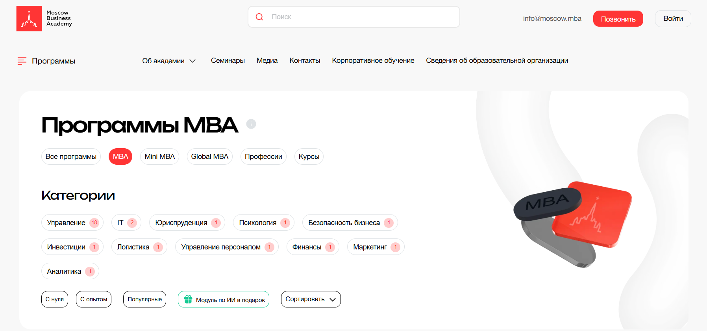
- ✅ Официальный сайт: moscow.mba
- 💸 Цена: от 106 500 ₽ с учетом действующих скидок до -55%.
- 💳 Рассрочка: предоставляется с помесячной оплатой на весь срок обучения от 8 875 ₽/мес.
- 📚 Формат: дистанционные форматы, обучение проходит онлайн, включают видеолекции, тестирования, учебные материалы и практические задания с кураторами.
- ⏳ Продолжительность: 18 месяцев, 2 700 часов.
- 📜 Документ: степень MBA (Master of Business Administration), дипломы международного образца с внесением в ФРДО.
- 📝 Трудоустройство: помощь в карьерных возможностях и поддержка после окончания обучения.
- 🔷 Для кого подходит курс: для менеджеров среднего и высшего звена, руководителей, предпринимателей и специалистов, ориентированных на развитие управленческих компетенций.
Особенности:
Business academy предлагает программы MBA, Executive MBA, MBA General и Mini MBA с модулем по ИИ. Обучение в дистанционном формате подходит менеджерам высшей категории и руководителям высшего уровня. Программы включают учебные модули по стратегическому управлению, стратегическому маркетингу, финансовым менеджментом и корпоративном управлении. Студенты получают практическое знание и навыков управления для решения управленческих задач. Курсы соответствуют стандартам MBA и ориентированы на развитие профессиональных компетенций. В процессе прохождения курсов слушатели получают доступы к учебных материалов и поддержке преподавателями. После окончания курсов выпускники получают дипломы МВА международного уровня. Обучение проходит с учетом современных технологий и образовательных стандартов. Московская Бизнес Академия имеет государственную лицензию №041221 от 30.12.2020.
Чему учатся студенты:
- Стратегическому менеджменту и стратегическому планированию
- Управлению проектами и операционному менеджменту
- Финансовым инструментам и корпоративных финансов
- Стратегиям маркетинга и развитию продаж
- Управлению персоналом и развитию команды
- Принятию стратегических решений в бизнесе
- Цифровой трансформации и управлению изменениями
Преподаватели:
- Более 165 экспертов с международным опытом и практикой в российских бизнес-школах
- Специалисты с опытом работы в международных организациях и крупных компаниях
- Практикующие управленцы и руководители с высоким уровнем квалификации
Преимущества:
- Дипломы международного образца, признаются в Европе
- Помощь в профессиональном росте и карьерных перспективах
- Удобный формат дистанционного обучения без отрыва от работы
- Более 12 000 выпускников по всему миру за 16 лет
- Постоянная связь с кураторами и преподавателями
- Современные учебные программы с обновлением
Отзывы учеников:
Слушатели отмечают удобные дистанционные форматы и возможность совмещать обучение с работой. Выпускники получают дипломы международного уровня и подчеркивают практическую направленность дисциплин. Часто выделяют поддержку кураторов, структурированные учебные материалы и высокий уровень преподавателей. Многие прошли обучение для развития бизнеса и повышения управленческих навыков, отмечая рост дохода и карьерных возможностей.
Перейти на официальный сайт курса3. 🏆 MBA General – Сити Бизнес Скул - City Business School
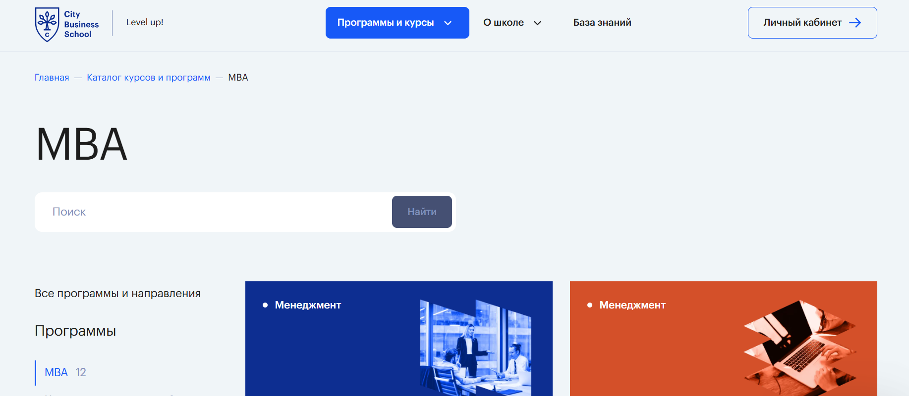
- ✅ Официальный сайт: e-mba.ru
- 💸 Цена: стоимость обучения указана на сайте, зависит от выбранного формата и сроков.
- 💳 Рассрочка: доступна, включая рассрочку от Сбера.
- 📚 Формат: обучение проходит онлайн, видеолекции в записи, практические задания, тестирования, работа с кейсами, поддержка тьюторов, доступ к учебным материалам в личном кабинете.
- ⏳ Продолжительность: 1,5 года.
- 📜 Документ: дипломы MBA российского и европейского образца, дипломы международного уровня.
- 📝 Трудоустройство: развитие управленческих компетенций и профессиональный рост для руководителей и менеджеров высшей звена.
- 🔷 Для кого подходит курс: для руководителя высшего и среднего звена, предпринимателей, специалистов с высшим образованием, ориентированных на развитие бизнеса и стратегию компании.
Особенности:
Программа MBA General разработана по стандартам MBA и ориентирована на развитие современных управленческих навыков. Обучение проходит в дистанционных форматах без привязки к очным занятиям, что удобно для совмещения с работой в компаниях и бизнесы. Студенты получают практическое знание по стратегическому управлению, финансовым менеджментом и стратегиям маркетинга. Курсы включают работу с реальных проектов и анализ управленческих решений. Программы MBA выстроены по международных стандартов business administration и учитывают требования международных рынков. После окончания обучения выпускники получают международных диплома, которые можно использовать для карьерных целей. Форматы обучения позволяют изучить базовых дисциплин и ключевых компетенций без отрыва от профессиональной деятельности.
Чему учатся студенты:
- Стратегическому менеджменту и стратегическому планированию
- Финансовым инструментам и корпоративных финансов
- Стратегическому маркетингу и стратегии продаж
- Управлению проектами и операционный менеджмент
- Корпоративном управлении и развитию управленческого опыта
- Принятию эффективных управленческих решений
Преподаватели:
- Эксперты ведущих международных корпораций — практики с управленческим опытом в крупных организациях
- Успешные предпринимателями и топ-менеджеры российских и зарубежных компаний
- Специалисты в сфере стратегическому развитию и финансовых дисциплин
Преимущества:
- Дистанционном обучении с доступом к материалам в любое удобное время
- Получения диплома международного образца по окончании курсов
- Интенсивное обучение с акцентом на практических навыков
- Поддержка тьюторов и обратная связь по заданиям
- Программы включают модули по стратегическому управлению и маркетингу
- Подходит для повышения квалификации и профессиональной переподготовке
Отзывы учеников:
Слушатели получают полезных знаний и отмечают удобный формат дистанционных курсов. Часто подчеркивают практическую направленность, работу с кейсы и поддержку преподавателями. Выпускники получают дипломы MBA и говорят о росту карьеры, повышении квалификации и расширении управленческих компетенциями.
Перейти на официальный сайт курса4. MBA Start (General) – Moscow Business School
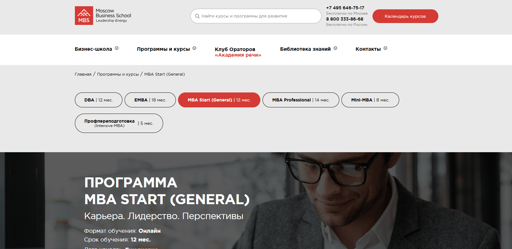
- ✅ Официальный сайт: mbschool.ru
- 💸 Цена: 319 000 ₽, при оплате в течение 3 дней — 287 100 ₽.
- 💳 Рассрочка: 13 292 ₽ в месяц на 24 месяца.
- 📚 Формат: онлайн-обучение, видеоконференции, вебинары, дискуссионные семинары, тестирования, разбор кейсов с тьютором, доступ к электронным библиотекам и базе учебных материалов.
- ⏳ Продолжительность: 12 месяцев.
- 📜 Документ: диплом Мастер делового администрирования — Master of Business Administration (MBA), Diploma Supplement и сертификаты школы.
- 📝 Трудоустройство: карьерное консультирование, рекомендации и помощь в упаковке профессиональных компетенций для работодателей.
- 🔷 Для кого подходит курс: для руководителей, предпринимателей, менеджеров высшей и средней звена, специалистов с высшим образованием, ориентированных на развитие управленческих навыков и профессиональный рост.
Особенности:
Программа реализуется в дистанционном формате и соответствует стандартам MBA, принятым в российских бизнес-школах и на международных уровнях. Обучение проходит ежедневно, что позволяет выбрать удобный график и совмещать занятия с работой в компаниях. Студенты получают доступ к расширенному пакету MBS Premium Access и могут проходить дополнительные дистанционные курсы без ограничений. Форматы обучения включают бизнес-симуляции, стратегические сессии и практику на основе реальных проектов. Отдельный модуль посвящён ИИ в управлении и применению современных технологий для стратегических решений. Дополнительно доступны курсы повышения квалификации и участие в закрытом бизнес-сообществе. После окончания обучения выпускники получают дипломы международного образца и общеевропейское приложение. Программа ориентирована на развитие управленческих компетенций, стратегическому управлению и эффективному управлению командами.
Чему учатся студенты:
- Экономической среде бизнеса и базовых дисциплин менеджменту
- Стратегическому менеджменту и стратегическому планированию
- Маркетингу и стратегиям маркетинга для развития бизнеса
- Финансам в организации и корпоративных финансов
- Управлению человеческими ресурсами и организационному развитию
- Операционный менеджмент и управление бизнес-процессов
- Разработке стратегию компании и стратегию продаж
- Применению ИИ для повышения эффективности управленческих решений
Преподаватели:
- Друтько Владислава Анатольевна — нейропсихолог, эксперт в области управления персоналом, сертифицированный мастер-тренер международного класса, кандидат психологических наук, автор книги «Управляй играя».
- Денисова Юлия Николаевна — сертифицированный коуч ICF, бизнес-тренер, специалист по развитию ораторского мастерства и деловых коммуникаций.
Преимущества:
- Дистанционные форматы обучения без отрыва от работы
- Интенсивное обучение с акцентом на практическое знание и навыков управления
- Дополнительное профессиональное образование с возможностью профессиональной переподготовке
- Бонусный модуль по искусственному интеллекту и современные инструменты анализа данных
- Нетворкинг с руководителями высшего звена и предпринимателями
- Соответствие международных стандартов и получение диплома MBA
Отзывы учеников:
Слушатели отмечают удобный онлайн-формат и качественные учебные материалы. Часто подчеркивают высокий уровень преподавателями и практическую направленность дисциплины. Выпускники пишут, что прошли обучение с пользой для карьеры, усилили управленческую квалификацию и получили актуальные знания в сфере стратегического менеджмента и финансовым менеджментом. Многие рекомендуют школу бизнеса за поддержку кураторов и реальные кейсы из бизнеса.
Перейти на официальный сайт курса5. MBA – Московский Институт Профессионального Образования
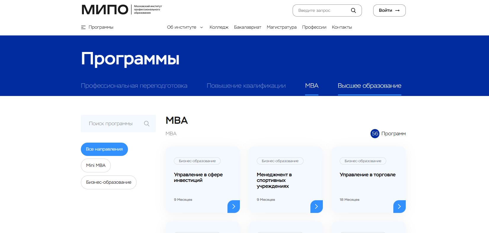
- ✅ Официальный сайт: mipo.msk.ru
- 💸 Цена: зависит от выбранной программы и сроков обучения.
- 💳 Рассрочка: предоставляются удобные форматы оплаты.
- 📚 Формат: обучение проходит онлайн, доступны дистанционные форматы, видеолекции, тестирования, практические задания, работа с учебными материалами и кейсы реальных проектов.
- ⏳ Продолжительность: 9 или 18 месяцев в зависимости от выбранного направления.
- 📜 Документ: по окончании обучения выпускники получают дипломы МВА и документы о дополнительном профессиональном образовании.
- 📝 Трудоустройство: программы ориентированы на профессиональный рост, развитие управленческих компетенций и карьерных возможностей руководителям и менеджерам высшей и средней звена.
- 🔷 Для кого подходит курс: для предпринимателей, топ-менеджеров, специалистов, планирующих развитие управленческого опыта и получение степени MBA.
Особенности:
Программы MBA реализуются в рамках бизнес-образования и соответствуют стандартам MBA и международных стандартов делового администрирования. Обучение проходит в дистанционном формате, что позволяет совмещать учебу с работой в компаниях и организациях любых сфер. Слушатели получают практическое знание по стратегическому управлению, финансовым менеджментом и стратегическому маркетингу. Учебные модули охватывают аспекты бизнеса, корпоративное управление, развитие бизнеса и управление проектами. В рамках подготовки менеджеров высшей категории студенты осваивают современные управленческие решения и инструменты для международных рынков. После окончания курсов выпускники получают дипломы международного уровня, подтверждающие квалификацию. Возможны программы executive MBA, general MBA и mini MBA для разных уровней подготовки. Курсы повышения квалификации и профессиональной переподготовке доступны в удобный сроку и формате.
Чему учатся студенты:
- Стратегическому менеджменту и стратегическому планированию
- Финансовых инструментов и корпоративных финансов
- Стратегиям маркетинга и развитию продаж B2B и B2C
- Управлению проектами и операционному менеджменту
- Корпоративном управлении и принятию стратегических решений
- Развитию ключевых компетенций и навыков управления командой
- Подготовке управленческих решений для российских и международных организаций
Преподаватели:
- Информация о преподавателях и экспертах представлена на официальном сайте института.
Преимущества:
- Дистанционные форматы обучения без отрыва от работы
- Выбор направлений: управление финансами, управление персоналом, управление рисками, цифровая трансформация в бизнесе
- Получение диплома по итогам завершения обучения
- Поддержка профессиональному развитию и карьерных росту
- Программы включают практическую подготовку на основе реальных проектов
- Возможность выбрать executive, general или mini формат
Отзывы учеников:
Слушатели отмечают удобный онлайн-формат, актуальные знания и практическую направленность программ. Часто подчеркивают высокий уровень учебных материалов и развитие управленческих навыков. Выпускники указывают на повышение квалификации и расширение карьерных возможностей после прохождения курсов. Также отмечается гибкость сроков обучения и понятная структура модулей.
Перейти на официальный сайт курса6. MBA для бизнеса – Русская Школа Управления
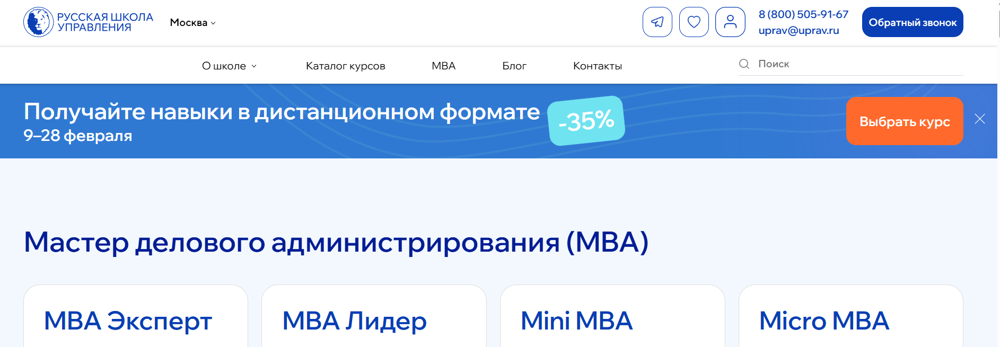
- ✅ Официальный сайт: uprav.ru
- 💸 Цена: от 70 000 ₽, действует скидка до 35% в период набора, подробности уточняются при подаче заявки.
- 💳 Рассрочка: доступна рассрочка на обучение от 6 533 ₽ в месяц.
- 📚 Формат: очные и дистанционные форматы, онлайн-занятия, видеоматериалы, практические задания, тестирование, работа над реальными проектами.
- ⏳ Продолжительность: от 2 дней до 12 месяцев в зависимости от выбранной программы.
- 📜 Документ: диплом о профессиональной переподготовке или удостоверение о повышении квалификации.
- 📝 Трудоустройство: развитие управленческих компетенций и поддержка профессионального роста выпускников.
- 🔷 Для кого подходит курс: собственникам бизнеса, топ-менеджерам, руководителям отделов, предпринимателям и специалистам, нацеленным на развитие карьеры.
Особенности:
Программы MBA ориентированы на развитие стратегического мышления и современных управленческих навыков. Обучение проходит в очном и дистанционном формате, включая онлайн-модули и работу с преподавателями-экспертами. Слушатели могут разбирать задачи своего бизнеса прямо во время занятий, что усиливает практическую направленность. Доступны направления executive mba, mba general и mini mba с различными сроками обучения. Курсы охватывают стратегическому управлению, финансовым менеджментом, стратегическому маркетингу и корпоративных финансов. В рамках формата 2.0 участники объединяются в проектные команды и работают над стратегическими решениями. Предусмотрен бесплатный курс первого модуля для знакомства с подходами школы бизнеса. После окончания обучения выпускники получают дипломы установленного образца. Программы соответствуют стандартам mba и ориентированы на подготовку менеджеров высшей и руководителя высшего звена.
Чему учатся студенты:
- Стратегическому менеджменту и стратегическому планированию
- Разработке стратегии компании и стратегии продаж
- Управлению проектами и бизнес-процессов
- Финансовых инструментов и корпоративном управлении
- Эффективному управлению командой и развитию управленческих компетенций
- Принятию управленческих решений в условиях ограничений рынка
Преподаватели:
- Эксперты Русской Школы Управления — практики с управленческим опытом в российских и международных компаниях
- Бизнес-консультанты и специалисты по стратегическому развитию и маркетингу
- Преподаватели с высокой квалификацией в сфере делового администрирования
Преимущества:
- Более 20 специализаций в рамках программы мва и mini-mba
- Дистанционные форматы и удобный формат обучения без отрыва от работы
- Практическая работа над реальных проектов слушателей
- Доступ к учебных материалов и дополнительным консультациям
- Поддержка профессионального развития и роста управленческого потенциала
- Возможность выбрать очным обучением в Москве
Отзывы учеников:
Слушатели отмечают высокую практическую ценность курсов, сильный преподавательский состав и удобные форматы обучения. Часто подчеркивают, что уже в процессе прохождения курсов получают реальные инструменты для бизнеса и применяют знания на практике. Выпускники говорят о росте профессиональных компетенций, улучшении навыков управления и расширении деловых контактов еще до завершения программы.
Перейти на официальный сайт курса7. Мини-MBA – РБК и ProductStar
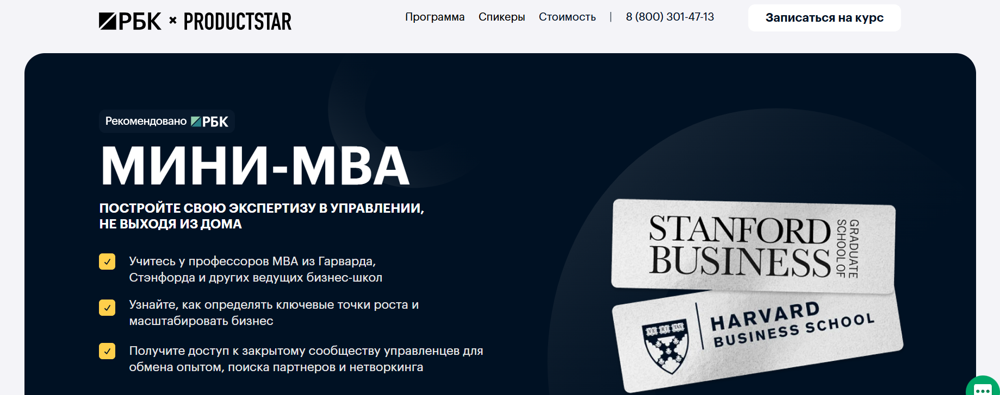
- ✅ Официальный сайт: rbc.productstar.ru
- 💸 Цена обучения: Полная стоимость — от 164 970 ₽ с учетом скидки.
- 💳 Рассрочка: от 7 638 ₽ в месяц по тарифу Standard и от 15 488 ₽ в месяц по тарифу Premium. Беспроцентная рассрочка от 3 до 36 месяцев или оплата одним платежом со скидкой 10%.
- 📚 Формат: онлайн-обучение, 71 урок, ежемесячные бизнес-семинары, групповые воркшопы, тестирования, практические кейсы, встречи 1-1 с ментором.
- ⏳ Продолжительность: 71 урок и 247 часов семинаров, доступ к материалам на 3 года.
- 📜 Документ: фирменный сертификат; в тарифе Premium — диплом о профессиональной переподготовке.
- 📝 Трудоустройство: карьерные консультации, развитие управленческих навыков и поддержка профессионального роста.
- 🔷 Для кого подходит курс: для руководителей, менеджеров высшей и средней ступени, предпринимателей и специалистов, нацеленных на развитие управленческих компетенций.
Особенности:
Программа mini mba ориентирована на развитие современных управленческих навыков и стратегическому менеджменту без отрыва от работы. Обучение проходит в дистанционном формате, что удобно для занятых руководителей высшего звена и менеджеров компаний. Студенты получают практическое знание по стратегическому управлению, финансовым менеджментом и стратегиям маркетинга через реальные кейсы российских компаний. Курсы включают модули по управлению командой, переговорам и аналитике данных, что помогает принимать взвешенные управленческие решения. В программе участвуют преподаватели ведущих бизнес-школы международного уровня. После окончания обучения выпускники получают дипломы и сертификаты, подтверждающие профессиональное образование и дополнительное профессиональное развитие. Доступ к закрытому сообществу управленцев расширяет деловые связи и помогает в развитии бизнеса. Форматы обучения предусматривают дистанционные занятия, семинары и интенсивное обучение с разбором реальных проектов.
Чему учатся студенты:
- Стратегическому планированию и построению стратегию компании
- Управлению продажами и стратегическому маркетингу
- Бюджетированию и работе с финансовых инструментов
- Аналитике и принятию решений на основе данных
- Управлению проектами и операционный менеджмент
- Развитию лидерства и управлению командой
- Переговорам и публичным выступлениям
- Личной эффективности и тайм-менеджменту
Преподаватели:
- Лу Шипли — профессор Гарвардской школы бизнеса, эксперт в области business administration и стратегическому развитию
- Игорь Селиванов — заместитель генерального директора РБК, практик корпоративных коммуникаций
- Лисен Стромберг — профессор бизнес-школы Стэнфорда, специалист по стратегическому управлению
- Энтони Кнопперс — преподаватель программы MBA в Роттердамской школе менеджмента
- Моше Коэн — профессор Questrom School of Business Бостонского университета
- Максим Яцкевич — Founder продуктовой мастерской «Психология продукта», AI Partner
- Софья Лукина — исполнительный директор компании «СОТА», тренер Scrum Trek
- Дмитрий Воронин — CEO Happy Electron
Преимущества:
- Соответствие стандартам mba и международных бизнес-школ
- Практическая направленность и разбор реальных управленческих задач
- Дистанционные форматы без сравнения с очным обучением по гибкости
- Доступ к материалам и образовательных технологий на 3 года
- Возможность получить диплом о профессиональной переподготовке
- Поддержка менторов и карьерные консультации
- Нетворкинг с управленцами и представителями различных сфер
Отзывы учеников:
Слушатели отмечают сильный практический блок и высокий уровень преподавателями из международных и российских бизнес-школ. Часто подчеркивают, что обучение помогает структурировать управленческий опыт, повысить квалификацию и уверенно принимать стратегические решения. Студенты получают полезные инструменты для развития бизнеса, роста карьеры и перехода на более высокий управленческий уровень.
Перейти на официальный сайт курса8. Digital MBA – Нетология
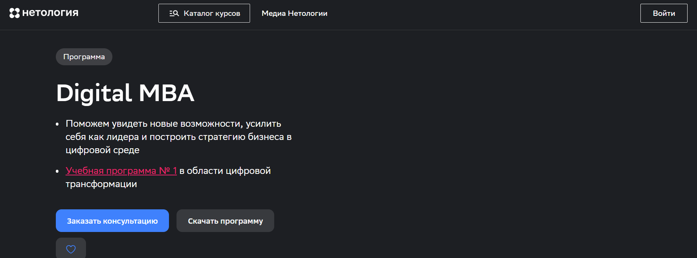
- ✅ Официальный сайт: netology.ru
- 💸 Цена: информация о стоимости обучения предоставляется по запросу после консультации.
- 💳 Рассрочка: доступные условия обсуждаются индивидуально при подаче заявки.
- 📚 Формат: онлайн-лекции с зарубежными профессорами, вечерние занятия с российскими экспертами, офлайн-воркшопы в Москве, тестирования, работа с кейсами и проектами, индивидуальные сессии.
- ⏳ Продолжительность: курс длится 7 месяцев.
- 📜 Документ: дипломы МВА по окончании обучения.
- 📝 Трудоустройство: развитие управленческих компетенций и поддержка профессионального роста для карьерных переходов.
- 🔷 Для кого подходит курс: руководителям высшего и среднего звена, предпринимателям, менеджерам, планирующим рост в сфере стратегического менеджмента и делового администрирования.
Особенности:
Программа executive mba ориентирована на развитие современных управленческих навыков и стратегическому управлению в цифровых бизнесах. Обучение проходит в дистанционном обучении с очным обучением в формате воркшопов, что объединяет дистанционные форматы и живую практику. Студенты получают практическое знание от преподавателями международных бизнес-школ и топ-менеджеров российских компаний. Учебных модулей пять, они охватывают стратегию компании, маркетингу, финансовым менеджментом и реализацию стратегических решений. В процессе прохождения курсов слушатели работают с реальных проектов и кейсы международных рынков. После окончания курсов выпускники получают дипломы, подтверждающие квалификацию в области business administration. Форматы обучения позволяют учиться из любых регионов, сохраняя удобный формат и интенсивное обучение без отрыва от работы.
Чему учатся студенты:
- Стратегическому менеджменту и стратегическому планированию в компаниях разных отраслей.
- Стратегическому маркетингу и стратегиям маркетинга для выхода на рынок.
- Финансовым инструментам, корпоративных финансов и операционный менеджмент.
- Управления проектами и управлению командой в условиях цифровых технологий.
- Анализу данных для принятия управленческих решений.
- Разработке и масштабированию продуктов на международных рынках.
Преподаватели:
- Shahzad Ansari — профессор стратегии и инноваций в Cambridge Judge Business School.
- Valerie Gauthier — профессор HEC Paris, основательница Savoir-Relier and Within, разработчица методологии Savoir-Relier.
- Олег Шибанов — профессор финансов, директор программ «Финансы, инвестиции, банки» и «Мастер наук по финансам» в РЭШ, директор Центра исследования финансовых технологий и цифровой экономики СКОЛКОВО-РЭШ.
- Профессор маркетинга Columbia University — эксперт международного уровня в сфере маркетинга.
- Андрей Филатов — генеральный директор SAP CIS.
- Александр Идрисов — основатель и управляющий партнёр Strategy Partners.
- Михаил Смолянов — основатель Финолога, председатель совета директоров UniSender, CEO Master Delivery.
Преимущества:
- Соответствие международных стандартов mba и обучение у профессоров ведущих business school.
- Сочетание западной теории и практического опыта российских топ-менеджеров.
- Развитие ключевых компетенций для эффективному управлению и корпоративном управлении.
- Нетворкинг с руководителями и предпринимателями из разных сфер.
- Индивидуальные сессии по развитию бизнеса с эксперты.
- Группа до 30 человек для качественных коммуникаций.
Отзывы учеников:
Выпускники отмечают высокий уровень организации обучения, актуальные знания и практическую направленность. Часто подчеркивают сильный преподавательский состав, удобным онлайн-формат и полезных деловых контактов. Многие руководители указывают, что прошли обучение для повышения управленческих компетенций и уже применяют инструменты в реальных бизнес-процессах.
Перейти на официальный сайт курса9. MBA – ИБДА РАНХиГС
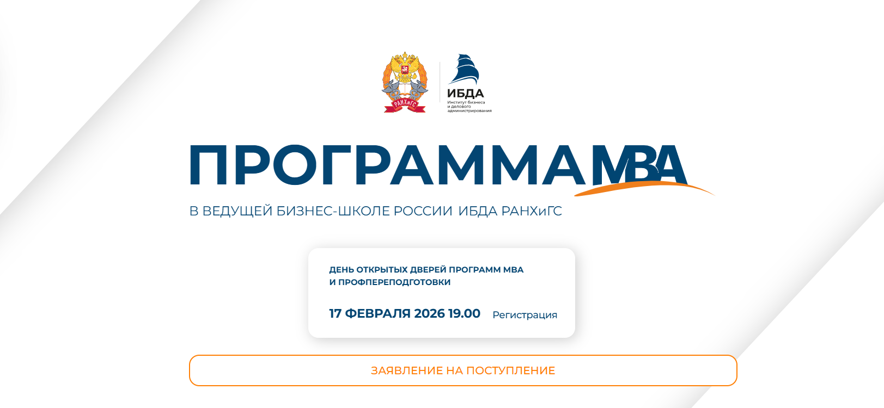
- ✅ Официальный сайт: mba.ranepa.ru
- 💸 Цена: указана на сайте бизнес-школы.
- 💳 Рассрочка: условия уточняются при подаче заявки.
- 📚 Формат: вечерний (2–3 раза в неделю с 19:00 до 22:00 и 1–2 субботы в месяц), weekend, модульный формат с возможностью онлайн-обучения, 6 двухнедельных учебных модулей, очно или онлайн.
- ⏳ Продолжительность: 21 месяц.
- 📜 Документ: диплом МВА по окончании обучения.
- 📝 Трудоустройство: развитие управленческих компетенций и карьерных возможностей для менеджеров высшего и среднего звена.
- 🔷 Для кого подходит курс: для руководителей, топ-менеджеров, предпринимателей и специалистов с высшим образованием, ориентированных на развитие управленческих навыков и стратегическое управление.
Особенности:
Программа реализуется в первой бизнес-школе России, получившей международные аккредитации AACSB International и AMBA. Обучение проходит в Москве по адресам: проспект Вернадского, 82 и Пречистенская набережная, 11. Форматы обучения позволяют выбрать удобный график: вечерний, weekend или модульный с дистанционными форматами. В рамках программы предусмотрены стратегические бизнес-симуляции, деловые игры, кейсы и воркшопы по обмену управленческим опытом. Особое внимание уделяется стратегическому менеджменту, финансовому менеджменту, операционному менеджменту и стратегическому маркетингу. Слушатели получают практическое знание и инструменты для разработки стратегии компании и управления командами. Предусмотрен зарубежный модуль для выпускников. Программа входит в топ-30 европейских бизнес-школ по версии Financial Times и имеет 5 пальмовых ветвей Eduniversal.
Чему учатся студенты:
- Стратегическому управлению и стратегическому планированию
- Маркетингу и управлению продажами
- Предпринимательству и управлению компанией
- Операционному менеджменту
- Технологиям стратегического прорыва и цифровой трансформации
- Принятию эффективных управленческих решений в корпоративных финансах
Преподаватели:
- Вероника Коцоева — директор программы МВА ИБДА, эксперт в области управленческого образования.
Преимущества:
- Международные аккредитации AACSB и AMBA
- 1 место в народном рейтинге бизнес-школ
- Более 190 выпускников и преподавателей в рейтинге «Топ-1000 российских менеджеров»
- Разнообразные форматы обучения, включая онлайн-опцию
- Практическая направленность и стратегические бизнес-симуляции
- Обучение в ведущей школе менеджмента России
Отзывы учеников:
Слушатели отмечают высокий уровень преподавателей, сильный состав группы со средним возрастом 35 лет и баланс финансовых дисциплин с развитием управленческих навыков. Часто подчеркивают практическую ценность кейсов, стратегических симуляций и нетворкинг с руководителями из разных сфер: производства, торговли, услуг и строительства.
Перейти на официальный сайт курса10. SKOLKOVO Executive MBA и SKOLKOVO MBA – Московская школа управления СКОЛКОВО
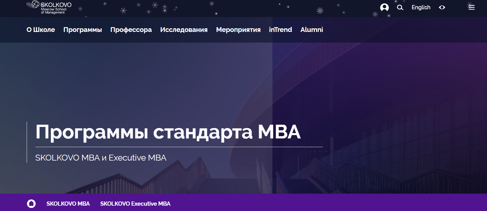
- ✅ Официальный сайт: skolkovo.ru
- 💸 Цена: Executive MBA — 14,5–15 млн ₽ в зависимости от потока; MBA — 7 300 000 ₽.
- 💳 Рассрочка: информация предоставляется консультантами.
- 📚 Формат: очное обучение на кампусе, модульная система с выездными модулями, занятия на русском и английском языках, синхронный перевод, практические проекты и интерактивные сессии.
- ⏳ Продолжительность: MBA — 15 модулей; Executive — модульный формат по 4 дня, общий срок около 18 месяцев.
- 📜 Документ: дипломы международного стандарта, выпускники получают дипломы MBA или Executive MBA.
- 📝 Трудоустройство: доступ к крупнейшему бизнес-сообществу выпускников и профильным мероприятиям школы менеджмента.
- 🔷 Для кого подходит курс: топ-менеджеры, предприниматели и собственники с опытом от 8 лет; управленцы до 35 лет с уровнем английского не ниже B2.
Особенности:
Программы MBA и executive mba аккредитованы НАСДОБР на максимальный срок — 5 лет, что подтверждает соответствие стандартам mba и высоким требованиям к управленческому образованию. Обучение проходит очно с модулями, которые позволяют совмещать развитие управленческих навыков с работой. Форматы обучения включают интенсивные занятия на кампусе и выездные сессии для погружения в реальные бизнесы. Студенты получают комплексное понимание стратегическому управлению, финансовым менеджментом и стратегиям маркетинга. В рамках программ executive особое внимание уделяется стратегическому планированию и принятию стратегических решений на уровне руководителя высшего звена. Школа бизнеса объединяет экспертов международного уровня и практиков из разных сфер. Выпускники получают доступ к сообществу, которое усиливает профессиональный рост и развитие управленческого потенциала.
Чему учатся студенты:
- Систематизации знаний по стратегическому менеджменту и корпоративному управлению
- Развитию стратегического мышления и комплексному видению бизнеса
- Работе с финансовыми инструментами и корпоративных финансов
- Управлению командой и реализации реальных проектов
- Формированию стратегии компании и стратегии продаж
- Применению современных управленческих технологий в компаниях
Преподаватели:
- Джек Вуд — приглашенный профессор СКОЛКОВО, профессор CEIBS и IMD
- Эрл Кей Стайс — приглашенный профессор HKUST (Китай)
- Александр Тильдиков — профессор бизнес-практики
- Елена Витчак — профессор бизнес-практики, проректор по операционной деятельности и цифровому развитию
- Вячеслав Болтрукевич — профессор бизнес-практики, академический директор образовательных программ
- Андрей Волков — профессор, директор Института общественных стратегий
- Ольга Удовиченко — приглашенный профессор СКОЛКОВО и Стокгольмской школы экономики
Преимущества:
- Аккредитация по международных стандартов и признание в российскому бизнес-сообществе
- Сильный профессорско-преподавательский состав и эксперты с практическом опыте
- Модульная система, удобная для действующих менеджеров высшей категории
- Развитие профессиональных компетенций и навыков управления на стратегическому уровне
- Нетворкинг и доступ к сообществу выпускников
- Гранты и дополнительные возможности финансирования
Отзывы учеников:
Слушатели отмечают высокий уровень преподавателями и практическую направленность занятий. Часто подчеркивают развитие управленческих компетенциями и системный подход к стратегическому развитию бизнеса. Выпускники ценят сильное сообщество и полезные деловые связи, которые помогают в карьерных переходах и запуске новых проектов. Многие указывают на интенсивное обучение и рост уверенности в принятии управленческих решений.
Перейти на официальный сайт курса11. Executive MBA – Евразийская Школа Менеджмента и Администрирования (EMAS)
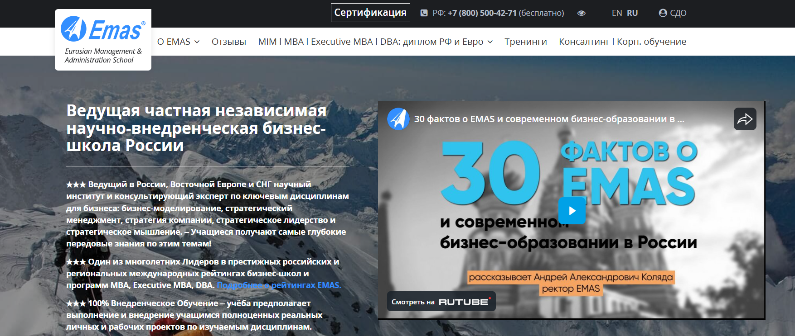
- ✅ Официальный сайт: emasrussia.ru
- 💸 Цена: информация о стоимости обучения предоставляется на официальном сайте и по телефону +7 (800) 500-42-71.
- 💳 Рассрочка: предусмотрены варианты оплаты и способы оплаты с учетом политики возврата услуги.
- 📚 Формат: очные, очно-дистанционные и онлайн форматы, дистанционные курсы, учебные модули, лекции, практические задания, работа над реальными проектами.
- ⏳ Продолжительность: сроки обучения зависят от выбранного формата и программы executive.
- 📜 Документ: выпускники получают дипломы MBA и международных диплома установленного образца РФ и Евро, подтверждающие степень MBA и квалификацию в сфере business administration.
- 📝 Трудоустройство: программы направлены на развитие управленческих навыков и профессиональных компетенций для карьерного роста руководителя высшего звена.
- 🔷 Для кого подходит курс: для менеджеров высшей категории, топ-менеджеров, предпринимателей и руководителей, заинтересованных в стратегическому управлению и развитию бизнеса.
Особенности:
Программа ориентирована на стратегическому менеджменту и стратегическому развитию компаний. Обучение проходит в высшей школе бизнеса с 15-летним опытом и международных рейтингах. Слушатели получают практическое знание и работают над внедрением реальных проектов в своих компаниях. В рамках подготовки управленческих кадров внимание уделяется стратегическому маркетингу, финансовым менеджментом и корпоративных финансов. Доступны дистанционные форматы и обучение проходит онлайн, что позволяет выбрать любое удобное время. Выпускники получают дипломы международного уровня и подтверждают квалификацию по стандартам MBA. Школа бизнеса входит в число лидеров российских бизнес-школах и представлена на международных рынков более чем в 70 странах.
Чему учатся студенты:
- Стратегическому планированию и разработке стратегию компании
- Принятию стратегических решений и управленческих решений
- Управлению продажами и формированию стратегию продаж
- Финансовых инструментов и корпоративном управлении
- Управления проектами и развитию управленческих компетенций
- Операционный менеджмент и управление бизнес-процессов
- Эффективному управлению командами и развитию навыков управления
Преподаватели:
- Коляда Андрей Александрович — ректор EMAS, обладатель 1-го места в общенациональной премии «Деловая книга года в России – 2024», эксперт по стратегическому менеджменту и бизнес-моделированию.
Преимущества:
- №1 Executive MBA и DBA в России по количеству выпускников согласно исследованию РБК.
- ТОП-5 Executive MBA в России и ТОП-40 и ТОП-64 в мире по версиям международных рейтингу Best Masters & MBAs Ranking.
- 100% внедренческое обучение с акцентом на практику и реальные проекты.
- Высокая удовлетворённость студентов — 4,9 из 5 по данным EDUopinions.
- Единственная глобальная business school в России и СНГ с экспортом программ в 70+ стран.
- Гибкие форматы обучения: очных, дистанционных и онлайн.
Отзывы учеников:
Слушатели отмечают высокий уровень преподавателями и акцент на стратегическому управлению. Часто подчеркивают практическую направленность и работу над реальных проектов. Выпускники получают сильные управленческие компетенциями и рост по карьерных направлениях. Отмечается удобный формат дистанционном обучении и поддержка со стороны школы менеджмента. Многие рекомендуют программу руководителям и менеджеры, которые хотят повысить квалификацию и выйти на высший управленческий уровень.
Перейти на официальный сайт курсаОтличительные преимущества каждой дистанционной программы обучения МВА для Психологов
| № | Курс и школа | Отличительные преимущества | Перейти |
|---|---|---|---|
| 🥇 | Психолог-консультант с международным дипломом MBA — НАДПО | 944 часа практики, 3 международных диплома (включая MBA Чехия), гарантия первых клиентов по договору, стажировки у партнёров. | Перейти |
| 🥈 | Профессия психолог-консультант VIP — Talentsy | 1200+ часов подготовки, 600 часов практики, 50 часов личной терапии и 50 часов супервизии, 10 первых клиентов, VIP-клуб выпускников. | Перейти |
| 🥉 | Профессия Психолог-консультант — Talentsy | 450 часов практики, 10 психологических подходов, 10 первых клиентов через сервис, международный MBA диплом и сертификаты IPHM/CPD. | Перейти |
| 4 | MBA «Психология в бизнесе» — Московская Бизнес Академия | 18 месяцев обучения, 70% практики, стратегический менеджмент и финансы, международный диплом MBA с регистрацией в ФРДО. | Перейти |
| 5 | Mini MBA «Психология в бизнесе» — Московская Бизнес Академия | 9 месяцев обучения, 190 материалов и 18 практических заданий, акцент на управлении и маркетинге, диплом MBA международного образца. | Перейти |
| 6 | Бизнес-психология — Smart | 600 часов подготовки, 5 управленческих модулей, участие в SmartMental, международные дипломы (Чехия, HISTES), развитие executive-навыков. | Перейти |
| 7 | Практический психолог — Smart | 1300 часов обучения, еженедельные супервизии, работа с реальными клиентами, 81% выпускников начинают практику сразу после завершения. | Перейти |
| 8 | Клинический психолог — Smart | 1206+ часов подготовки, 650 часов практики, 20 часов консультаций с реальными клиентами, стажировки в 50+ фондах. | Перейти |
| 9 | «Психолог-коуч» + MBA — Московский Институт Профессионального Образования | 3 диплома и 2 квалификации, сочетание коучинга и MBA, акцент на управленческие компетенции и бизнес-консультирование. | Перейти |
| 10 | Психолог – когнитивно-поведенческий терапевт + MBA — Московский Институт Профессионального Образования | 998 часов по психологии + 966 часов по КПТ, 2 квалификации, интеграция CBT и MBA, международное приложение к диплому. | Перейти |
| 11 | «Гештальт-терапевт» + MBA — Московский Институт Профессионального Образования | 15 месяцев подготовки, гештальт-подход + MBA general, управленческий уклон, подготовка к международной практике. | Перейти |
1. 🏆 Психолог-консультант с международным дипломом MBA — НАДПО
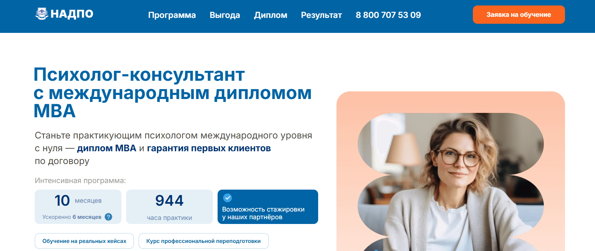
- ✅ Официальный сайт: psy.nadpo.ru
- 💸 Цена: 75 200 ₽ со скидкой 65% (полная стоимость 214 900 ₽).
- 💳 Рассрочка: от 4 178 ₽/мес, 0% без первого взноса.
- 📚 Формат: дистанционные форматы обучения, видеоуроки, практические занятия, тестирования, работа с кейсами, доступ к электронной библиотеке.
- ⏳ Продолжительность: 10 месяцев (944 часа практики), ускоренно — 6 месяцев.
- 📜 Документ: диплом о профессиональной переподготовке, международных диплома MBA (Чехия) и сертификаты HiSTES, сведения вносятся в ФИС ФРДО.
- 📝 Трудоустройство: гарантируют первых клиентов по договору, помощь HR и Центра карьеры.
- 🔷 Для кого подходит курс: для смены профессии, действующих специалистов сферы психического здоровья и всех, кто интересуется психологией.
Особенности:
Программа сочетает профессиональное образование и элементы business administration по стандартам mba, что усиливает развитие управленческих компетенций и навыков работы с клиентами. Обучение проходит онлайн в удобный формат, без отрыва от работы. Более 30% времени уделяется практике, поэтому студенты получают практические навыков консультирования уже в процессе обучения. Программы включают стажировку у партнёров и работу с реальными кейсами. Выпускники получают международных диплома, соответствующие государственным требованиям. В рамках дистанционных курсов предусмотрена поддержка кураторов и помощь в продвижении частной практики. После окончания обучения слушатели получают доступ к карьерным консультациям и сопровождению при выходе на рынок услуг.
Чему учатся студенты:
- Основам психологического консультирования и этическим стандартам профессиональной деятельности.
- Различным подходам: коучинг, когнитивно-поведенческая терапия, психоанализ.
- Работе с тревогой, депрессией, психотравмами и проблемами в отношениях.
- Проведению обследований и составлению индивидуальных планов терапии.
- Применению практических инструментов: активное слушание, эмпатия, доказательные вмешательства.
Преподаватели:
- Анастасия Регнер — эксперт в консультировании по трудоустройству, бизнес-тренер с опытом публичных выступлений с 2019 года.
- Более 80% преподавателей — профессоры и кандидаты наук, практикующие специалисты с высокой квалификацией.
Преимущества:
- Гарантия первых клиентов сразу после завершения обучения.
- Интенсивное обучение с упором на практическую подготовку.
- Дистанционные форматы с доступом к учебных материалов 24/7.
- Дипломы международного уровня и внесение данных в государственный реестр.
- Рассрочка 0% и удобные условия оплаты.
- Поддержка в профессиональном росте и развитии частной практики.
Отзывы учеников:
Слушатели отмечают большое количество практики и помощь в получении первых клиентов. Часто упоминают удобный формат дистанционного обучения и поддержку кураторов. Выпускники получают дипломы и реальные кейсы для портфолио, что помогает быстрее начать карьеру и выйти на стабильный доход уже в первые месяцы работы.
Перейти на официальный сайт курса2. 🏆 Профессия психолог-консультант VIP – Talentsy
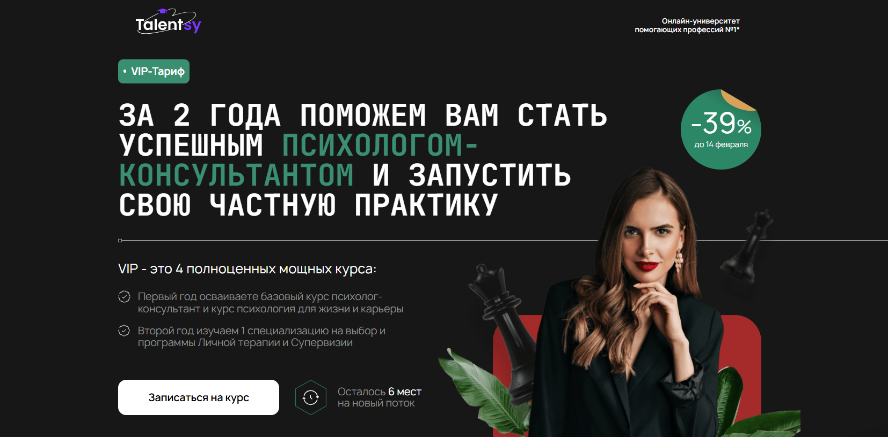
- ✅ Официальный сайт: talentsy.ru
- 💸 Цена: от 520 000 ₽ со скидкой 39% (грант на обучение).
- 💳 Рассрочка: беспроцентная от 21 667 ₽ в месяц до 24 месяцев через банки-партнёры.
- 📚 Формат: онлайн-обучение, 450+ видеолекций, практические занятия в мини-группах до 15 человек, супервизии, личная терапия, дополнительные материалы.
- ⏳ Продолжительность: 2 года (базовая подготовка — 12 месяцев).
- 📜 Документ: диплом о профессиональной переподготовке установленного образца РФ, MBA диплом Open European Academy (Прага), международные сертификаты IPHM и CPD.
- 📝 Трудоустройство: предоставляют первые 10 обращений клиентов, подключение к сервису консультирования и обучение продвижению личного бренда.
- 🔷 Для кого подходит курс: для новичков без профильного образования, начинающих психологов, практикующих специалистов и тех, кто хочет получить официальный диплом.
Особенности:
Обучение проходит онлайн и сочетает фундаментальную теорию и интенсивную практику. Программа разработана на основе ФГОС ВО 37.03.01 «Психология» и соответствует профессиональным стандартам. Студенты получают 1200+ часов подготовки, из них 600 часов практических занятий. Уже с первых месяцев начинается работа с кейсами и развитие практических навыков консультирования. В тариф включены 50 часов личной терапии и 50 часов супервизии, что важно для профессионального роста. Доступен выбор специализации: от детской психологии до когнитивно-поведенческой терапии и гештальт-подхода. Занятия ведут 15 преподавателей — практикующие психологи, кандидаты и доктора наук. Выпускники получают доступ в закрытый VIP-клуб с мастерскими психологического консультирования.
Чему учатся студенты:
- Основам профессии психолога-консультанта
- Пониманию работы мозга и поведения человека
- Методам психологической диагностики
- Возрастной и семейной психологии
- Кризисной психологической помощи
- Современным модальностям консультирования
- Формированию личного бренда и привлечению клиентов
- Работе с реальными обращениями под супервизией
Преподаватели:
- Елена Новоселова — практикующий психолог-консультант, ведущая мастерских консультирования.
- Васильева — практикующий специалист, преподаватель профильных дисциплин.
- Кунникова — психолог, эксперт в консультировании.
- Виндекер — преподаватель, практикующий консультант.
- Лебедева — специалист по работе с клиентскими кейсами.
- Подкорытова — эксперт в сфере психологической практики.
- Николаева — преподаватель психологических дисциплин.
- Фомичева — практикующий психолог.
- Двойнин — специалист по консультированию.
- Киселёв — преподаватель и консультант.
- Меглинская — эксперт по практической психологии.
- Томина — практикующий специалист.
Преимущества:
- 1200+ часов подготовки и 450+ экспертных видеолекций
- Мини-группы до 15 человек с поддержкой куратора
- Международные сертификаты и MBA диплом
- Практика с первых дней обучения
- Сотрудничество с профессиональными ассоциациями
- Возможность начать зарабатывать во время обучения
- Закрытое профессиональное сообщество выпускников
Отзывы учеников:
Слушатели отмечают высокий уровень преподавателей и удобный онлайн-формат. Часто выделяют большое количество практики и поддержку кураторов. Выпускники пишут о реальной помощи в запуске частной практики и ценят возможность получить официальный диплом и международные сертификаты. Многие подчёркивают, что благодаря супервизии и личной терапии чувствуют уверенность в работе с клиентами.
Перейти на официальный сайт курса3. 🏆 Профессия Психолог-консультант – Talentsy
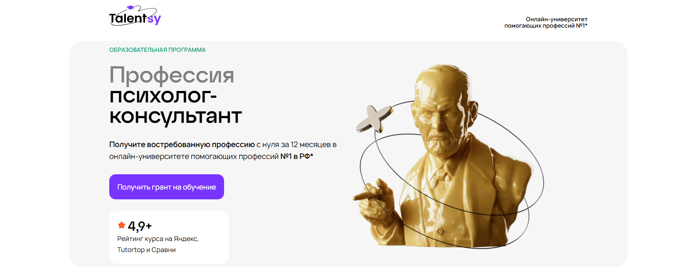
- ✅ Официальный сайт: talentsy.ru
- 💸 Цена: от 225 000 ₽ с учетом гранта 110 000 ₽ (скидка 40%).
- 💳 Рассрочка: от 9 375 ₽ в месяц на 3, 6, 12 или 24 месяца через банки-партнеры без переплат.
- 📚 Формат: онлайн-обучение, 250 видеолекций по 15–40 минут, 450 часов практики, домашние задания с разбором, супервизии, интервизии, тестирования, дополнительные учебные материалы и шаблоны.
- ⏳ Продолжительность: 12 месяцев, 1 200 часов программы.
- 📜 Документ: диплом о профессиональной переподготовке установленного образца РФ, международный диплом MBA Open European Academy (Прага), сертификаты IPHM и CPD.
- 📝 Трудоустройство: предоставляют первые 10 обращений клиентов через сервис pomogayu.ru, обучение продвижению и личному бренду.
- 🔷 Для кого подходит курс: для начинающих без профильного образования и специалистов, планирующих пройти переподготовку и получить новые профессиональные компетенции.
Особенности:
Обучение проходит в дистанционном формате с доступом 24/7 и поддержкой кураторов. Программа разработана на основе ФГОС ВО 370301 «Психология» и соответствует профессиональным стандартам. Студенты получают 450 часов практических занятий, что усиливает развитие необходимых навыков и практических инструментов. В программу включены 10 психологических подходов и интегративная модель консультирования. Выпускники получают дипломы российского и международного уровня, включая степень MBA в сфере business administration. Предусмотрены регулярные онлайн-встречи и очные мероприятия в крупных городах России. После окончания обучения участники могут вступить в профессиональные ассоциации на особых условиях. Университет сотрудничает с IAAGT и профильными объединениями, что усиливает международный опыт и расширяет возможности профессионального роста.
Чему учатся студенты:
- Основам психологического консультирования и диагностике личности
- Работе со стрессом, тревогой, выгоранием и возрастными кризисами
- Методам когнитивно-поведенческой терапии и гештальт-подхода
- Навыкам выстраивания сессии и установления доверия с клиентом
- Кризисной психологической помощи и работе с травмой
- Продвижению личного бренда и развитию частной практики
Преподаватели:
- Ольга Виндекер — психолог с практическим опытом более 30 лет, член Российской Психотерапевтической Лиги, журналист, автор книг.
- Ксения Кунникова — кандидат психологических наук, психофизиолог, нейропсихолог, руководитель грантов РФФИ.
- Анжелика Вильгельм — кандидат психологических наук, психолог-консультант, супервизор, член Российского психологического общества.
- Наталья Куделькина — психотерапевт, клинический психолог, кандидат психологических наук, опыт консультирования более 19 лет.
- Рустам Муслумов — кандидат психологических наук, доцент кафедры педагогики и психологии образования УрФУ.
- Ярослав Коряков — психотерапевт, тренинговый аналитик и супервизор Европейской конфедерации психоаналитической психотерапии.
Преимущества:
- Грант 110 000 ₽ и возможность вернуть 13% через налоговый вычет
- Дистанционные форматы обучения без отрыва от работы
- Поддержка двух кураторов и обратная связь по каждому заданию
- Доступ к образовательной платформе и обновлениям навсегда
- Обучение продвижению, продажам и развитию профессиональной карьеры
- Рейтинг 4,9+ на независимых площадках
Отзывы учеников:
Студенты отмечают удобный онлайн-формат, большой объем практики и поддержку преподавателями. Часто подчеркивают качественное образование, подробный разбор домашних заданий и реальные результаты уже во время обучения. Выпускники получают дипломы и начинают частную практику, совмещая работу с дистанционным обучением.
Перейти на официальный сайт курса4. MBA «Психология в бизнесе» – Московская Бизнес Академия
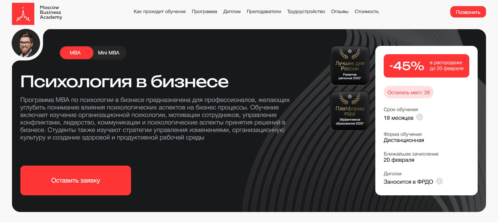
- ✅ Официальный сайт: moscow.mba
- 💸 Цена обучения: 390 500 ₽ со скидкой 45%.
- 💳 Рассрочка: 10 847 ₽ в месяц на 36 месяцев без переплаты, первый платеж через месяц, возможен налоговый вычет 13%.
- 📚 Формат: дистанционные форматы — 395 видеоматериалов, 40 практических заданий, онлайн-вебинары, итоговый проект, обратная связь с преподавателями и поддержка кураторов.
- ⏳ Продолжительность: 18 месяцев.
- 📜 Документ: международный диплом установленного образца с присвоением степени Master of Business Administration, дипломы МВА заносятся в ФРДО.
- 📝 Трудоустройство: помощь в составлении резюме, оформлении портфолио, подготовке к собеседованиям и работе с клиентами.
- 🔷 Для кого подходит курс: для руководителей высшего и среднего звена, предпринимателей, менеджеров высшей категории, специалистов по управлению персоналом и развитию бизнеса.
Особенности:
Программа МВА ориентирована на развитие управленческих навыков и профессиональных компетенций через дистанционное обучение. Обучение проходит онлайн на современной платформе с доступом к учебным материалам из любой точки мира. Слушатели получают практическое знание в области стратегического управления, маркетинга и корпоративных финансов. В основе — стандарты MBA и международных организаций бизнес-образования. Курсы включают базовые дисциплины и специализированные модули по психологии управления и потребительского поведения. Программа подходит для подготовки управленческих кадров и развития стратегического мышления. Выпускники получают степень МВА и международных диплома, подтверждающие квалификацию в сфере business administration.
Чему учатся студенты:
- Стратегическому менеджменту и стратегическому планированию
- Финансовому менеджменту и работе с финансовыми инструментами
- Управлению человеческими ресурсами и развитию команды
- Психологии управления и мотивации сотрудников
- Стратегиям маркетинга и анализу потребительского поведения
- Принятию стратегических решений и управлению проектами
- Управлению конфликтами и изменениям в организациях
- Эффективным бизнес-коммуникациям и переговорам
Преподаватели:
- Роман Могучев — специалист по внедрению корпоративного обучения с опытом работы в системе образования Москвы, включая ведущие ВУЗы.
- Романенко Виктория — бизнес-психолог, бизнес-тренер.
- Наталия Шувалова — предприниматель и бизнес-тренер, кандидат экономических наук, более 17 лет опыта в аудите и бухгалтерии.
Преимущества:
- Дистанционные форматы позволяют совмещать обучение с работой
- 70% программы — практика на основе реальных проектов
- Дипломы международного образца с регистрацией в ФРДО
- Обучают эксперты с опытом работы в крупных компаниях
- Доступ к дополнительным модулям по управлению изменениями и корпоративной социальной ответственности
- 62% выпускников продвинулись по карьерной лестнице
Отзывы учеников:
Слушатели отмечают удобный формат дистанционных курсов и высокий уровень преподавателей. Часто подчеркивают практическую направленность программы, актуальные знания по менеджменту и маркетингу, поддержку кураторов и возможность совмещать обучение с профессиональной деятельностью. Выпускники рекомендуют академию за качественное образование и реальные результаты в развитии карьеры.
Перейти на официальный сайт курса5. Mini MBA «Психология в бизнесе» – Московская Бизнес Академия
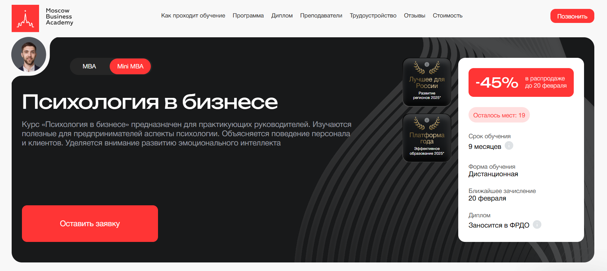
- ✅ Официальный сайт: moscow.mba
- 💸 Цена: 286 000 ₽ при единовременной оплате.
- 💳 Рассрочка: от 7 944 ₽ в месяц со скидкой 45% до 36 месяцев без переплаты, первый платеж через месяц, возможен налоговый вычет 13%.
- 📚 Формат: дистанционные форматы — видеоуроки, 190 учебных материалов, 18 практических заданий, онлайн-вебинары, тестирования, обратная связь от преподавателями и поддержка кураторы.
- ⏳ Продолжительность: 9 месяцев, ближайшее зачисление — 20 февраля.
- 📜 Документ: дипломы МВА международного образца, данные заносятся в ФРДО.
- 📝 Трудоустройство: помощь в составлении резюме, подготовке к собеседованиям и формировании портфолио после окончания обучения.
- 🔷 Для кого подходит курс: руководителям, менеджеры среднего звена, HR-специалисты, предпринимателями, специалистам по развитию персонала.
Особенности:
Программа mini mba разработана с учетом стандартам mba и ориентирована на развитие управленческих навыков через практическую работу с реальных проектов. Обучение проходит в дистанционном обучении на современной онлайн-платформе с доступом к материалам из любой точки мира. Слушателями становятся руководителя высшего и среднего звена, которым важно развитие управленческого опыта и ключевых компетенций. Учебных модулей достаточно для освоения стратегическому управлению, финансовым менеджментом и маркетингу без отрыва от работы. Выпускники получают дипломы международного уровня, что подтверждает квалификация в сфере business administration. Программы mba включают базовых дисциплин и специализированные модулями по психологии управления. После завершения обучения студенты получают поддержку центра карьеры. Возможны дополнительные бонусные блоки для закрепления знаний и профессиональному развитию.
Чему учатся студенты:
- Стратегическому менеджменту и стратегическому планированию
- Управлению проектами и операционный менеджмент
- Финансовых инструментов и основам корпоративных финансов
- Стратегическому маркетингу и стратегиям маркетинга
- Управлению человеческими ресурсами и развитию команды
- Психоанализу и бизнес-консультированию
- Поведенческой психологии и психологии потребительского поведения
- Эффективному управлению конфликтами и переговорами
Преподаватели:
- Алексей Матушкин — магистр инноваций и социологии, преподаватель и лингво-коуч с опытом более 12 лет, член международной ассоциации IATEFL.
- Ведерникова Надежда — действующий практикующий член всероссийской психотерапевтической лиги, более 20 лет в консалтинге и управлении маркетингом.
- Ангелина Шам — корпоративный бизнес-психолог, кандидат наук, автор книг по психологии и коммуникации, эксперт с опытом в коучинге и бизнесе.
Преимущества:
- Дистанционные форматы позволяют совмещать обучение с работой
- Программы executive и general mba соответствуют международных стандартов
- 70% занятий — практика и разбор реальных кейсы
- Поддержка кураторы и регулярная обратная связь
- Государственная лицензия №041221
- Доступ к образовательных технологий и материалам в режиме онлайн
- Возможность продолжить обучение на дополнительных модулях
Отзывы учеников:
Студенты отмечают удобный формат дистанционных курсов и сильный преподавательский состав. Часто подчеркивают практическую направленность программы, понятную подачу сложных тем по менеджменту и финансам, а также помощь в карьерных возможностях после окончания курсов. Выпускники пишут, что уже во время прохождения применяют инструменты в компаниях и видят рост эффективности команды.
Перейти на официальный сайт курса6. Бизнес-психология – Smart
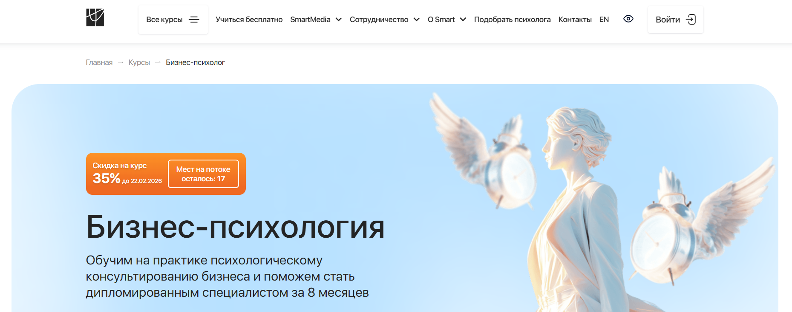
- ✅ Официальный сайт: smart-inc.ru
- 💸 Цена: Полная стоимость со скидкой — от 199 900 ₽.
- 💳 Рассрочка: от 8 329 ₽ в месяц со скидкой 35% на 3, 6, 12 и 24 месяца, первый платёж через месяц, без переплат.
- 📚 Формат: дистанционное обучение онлайн: видеолекции 24/7, тестирования, домашние задания, супервизии, деловые игры, разбор кейсов, интенсивы и сессии «вопрос-ответ».
- ⏳ Продолжительность: от 8 месяцев, от 600 часов.
- 📜 Документ: диплом о профессиональной переподготовке, дипломы MBA, международных диплома (Чехия, HISTES Гамбург), регистрация в ФРДО.
- 📝 Трудоустройство: участие в сервисе SmartMental, стажировки, поддержка Центра карьеры, сопровождение после окончания обучения.
- 🔷 Для кого подходит курс: для руководителей, менеджеров, коучей, предпринимателей и всех, кто планирует получить профессиональное образование и работать с бизнесами.
Особенности:
Программа ориентирована на развитие управленческих навыков и профессиональных компетенций в сфере business и корпоративных процессов. Обучение проходит в дистанционных форматах с акцентом на практические навыки и работу с реальными проектами. Студенты получают доступы к учебных материалам 24/7 и проходят онлайн супервизии с преподавателями-практиками. Курсы включают 5 учебных модулей: основы бизнес-психологии, психология лидерства, коучинг в организациях, конфликты и переговоры. Форматы обучения позволяют совмещать занятия с работой в компаниях и управленческую практику без отрыва от карьеры. После окончания курсов выпускники получают дипломы, соответствующие стандартам mba и международных стандартов образования. Возможность выбрать пакет с дипломы мва расширяет перспективы на международных рынков и в корпоративном управлении. Программа сочетает элементы executive mba, general mba и mini mba, что усиливает стратегическому управлению и развитию бизнеса.
Чему учатся студенты:
- Стратегическому управлению и стратегическому планированию в компаниях.
- Выстраиванию эффективных коммуникаций и управлению командой на разных уровнях.
- Разрешению конфликтов и принятию управленческих решений в кризисных ситуациях.
- Переговорам и публичным выступлениям для руководителя высшего звена.
- Работе с бизнес-процессов, корпоративных финансов и аспектами развития бизнеса.
- Применению современных инструментов и технологий в консультировании организаций.
- Формированию стратегии компании и стратегии продаж с опорой на актуальные знания.
Преподаватели:
- Светлана Варнавская — коуч MCC ICF (4000+ часов), специализация: коучинг первых лиц, трансформационный коучинг, КПТ-коучинг, ментор и супервизор, асессор сертифицированных программ ICF, практикующий психолог.
Преимущества:
- 600 часов подготовки управленческих компетенций и практическое знание через кейсы.
- Дистанционные форматы и удобный формат обучения из любой точки.
- Супервизии, интенсивное обучение и поддержка кураторы 24/7.
- Возможность получения диплома международного уровня и степени mba.
- Участие в профессиональном сообществе и программах повышения квалификации.
- Помощь в развитии управленческого опыта и профессиональному развитию.
Отзывы учеников:
Слушатели отмечают высокий уровень преподавателями, практическую направленность и большое количество реальных кейсов. Студенты подчеркивают удобным дистанционном обучении, оперативную поддержку кураторы и эксперты, а также полезные материалы и работу с реальных проектов. Многие выпускники получают первых клиентов уже во время прохождения программы и рекомендуют обучение для карьерных роста и расширения профессиональных возможностей.
Перейти на официальный сайт курса7. Практический психолог – Smart
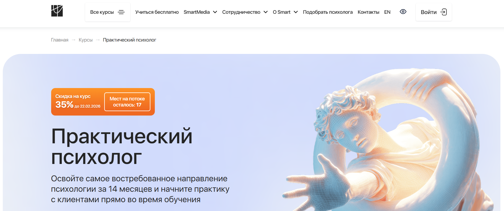
- ✅ Официальный сайт: smart-inc.ru
- 💸 Цена: Полная стоимость со скидкой — от 234 900 ₽.
- 💳 Рассрочка: от 9 788 ₽ в месяц со скидкой 35% на 3, 6, 12 или 24 месяца. Первый платёж через 1 месяц, проценты берёт на себя институт. Возможен налоговый вычет 13%.
- 📚 Формат: дистанционное обучение, видеолекции 24/7, практические занятия каждую неделю, супервизии, учебные тройки, онлайн-сессии «Вопрос-ответ», тестирования, домашние задания с обратной связью, работа с реальными клиентами в SmartHelp и SmartMental.
- ⏳ Продолжительность: 14 месяцев, 1300 часов.
- 📜 Документ: диплом о профессиональной переподготовке установленного образца, регистрация в ФРДО; возможен диплом MBA (Чехия), HISTES (Гамбург).
- 📝 Трудоустройство: участие в программе SmartMental для получения первых клиентов, стажировки в фондах и у партнёров, поддержка Центра карьеры.
- 🔷 Для кого подходит курс: для смены профессии, старта частной практики, развития профессиональных компетенций и получения дополнительного профессионального образования независимо от возраста и базовых знаний.
Особенности:
Обучение проходит полностью онлайн с гибким графиком и удобным форматом занятий. Студенты получают много практики уже с первого месяца: учебные тройки, групповые супервизии и работа с реальными кейсами. Курс длится 14 месяцев и включает 5 учебных модулей. В программу входят 120 часов интенсивных практических занятий и 72 часа отработки техник. Поддержка кураторов и менторов доступна 24/7, что помогает быстрее осваивать навыки консультирования. После окончания обучения выпускники получают диплом о профессиональной переподготовке, соответствующий государственным требованиям. Доступ к материалам сохраняется, что позволяет возвращаться к лекциям и дополнительным модулям в любое удобное время. Центр карьеры помогает с первыми клиентами и профессиональным ростом. Примерно 81% выпускников начинают консультировать сразу после завершения обучения.
Чему учатся студенты:
- Проводить индивидуальные консультации и выстраивать структуру сессии
- Работать с тревогой и эмоциональным выгоранием
- Разбирать семейные конфликты и восстанавливать отношения
- Сопровождать клиентов в карьерных кризисах
- Применять современные техники психологического консультирования
- Проводить групповые форматы работы
- Соблюдать профессиональную этику и стандарты практики
Преподаватели:
- Надежда Лукина — кандидат психологических наук, клинический психолог, в профессии с 2005 года, руководитель исследований современных проблем психологической науки, автор 6 курсов и более 10 научных статей.
- Христина Корлякова — практикующий специалист и преподаватель курса.
Преимущества:
- 1300 часов обучения с акцентом на практические навыки
- Еженедельные супервизии и работа с реальными клиентами
- Диплом с регистрацией в ФРДО и возможность получения международных дипломов
- Гибкие форматы дистанционного обучения без привязки к месту проживания
- Поддержка кураторов, тьюторов и менторов на каждом этапе
- Помощь в старте частной практики через собственный сервис подбора психологов
Отзывы учеников:
Студенты чаще всего отмечают большое количество практики, поддержку преподавателей и оперативную обратную связь кураторов. Многие подчеркивают, что благодаря дистанционному формату смогли совмещать обучение с работой. Выпускники положительно оценивают помощь в получении первых клиентов и понятную структуру модулей. Отдельно отмечают атмосферу безопасности и уверенности во время практических занятий.
Перейти на официальный сайт курса8. Клинический психолог – Smart
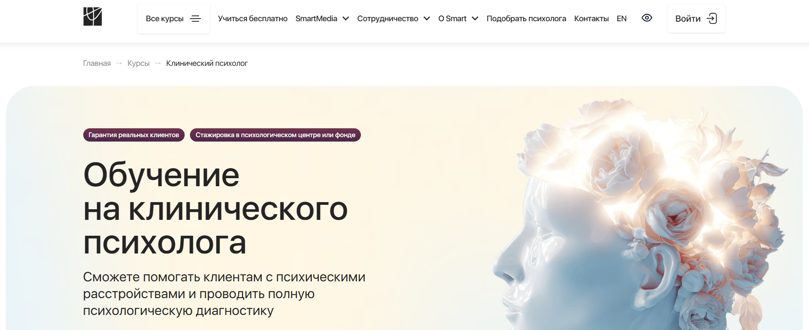
- ✅ Официальный сайт: smart-inc.ru
- 💸 Цена: Полная стоимость со скидкой от 274 900 ₽.
- 💳 Рассрочка: от 17 625 ₽ в месяц, со скидкой — от 11 454 ₽/месяц до 24 месяцев.
- 📚 Формат: дистанционное обучение, видеолекции, интерактивная платформа 24/7, практические задания, тестирования, онлайн-сессии «Вопрос-ответ», групповые супервизии, работа в тройках.
- ⏳ Продолжительность: от 13 месяцев, от 1206 часов.
- 📜 Документ: диплом о профессиональной переподготовке и диплом MBA (Чехия), регистрация в ФРДО.
- 📝 Трудоустройство: 20 часов консультаций с реальными клиентами через Smart Mental, стажировка в фондах и центрах, поддержка после окончания обучения.
- 🔷 Для кого подходит курс: для начинающих без профильного образования, практикующих психологов, медицинских работников и специалистов, планирующих смену сферы.
Особенности:
Обучение проходит в дистанционных форматах и подходит для совмещения с работой. Студенты получают практику каждую неделю и работают с реальными кейсами. Программа включает 13 учебных модулей и более 650 часов практики. После завершения обучения выпускники получают дипломы международного уровня и могут начать консультировать. Доступ к материалам сохраняется навсегда. В курс включены супервизии с экспертами и подробная обратная связь от кураторов. Предусмотрена стажировка в благотворительных организациях, где слушатели получают практический опыт. Возможность участия в программе SmartMental позволяет быстрее выйти на рынок частной практики. Поддержка команды доступна 24/7.
Чему учатся студенты:
- Основам клинической психологии и психодиагностики
- Работе с депрессией, ПРЛ, ПТСР, БАР и ОКР
- Психофизиологии и нейропсихологии
- Методам психологической коррекции взрослых и детей
- Психосоматике и взаимосвязи эмоций с физическим состоянием
- Психофармакологии и дифференциальной психологии
- Подготовке к самостоятельной практике
Преподаватели:
- Кристина Юст — клинический психолог, детский нейропсихолог, более 6 лет практики, свыше 4000 часов консультаций, более 150 нейропсихологических диагностик ежегодно.
- Альбина Собина — практикующий специалист и преподаватель программы.
Преимущества:
- Диплом установленного образца с регистрацией в ФРДО
- Гарантия реальных клиентов через агрегатор Smart Mental
- Стажировка в 50+ фондах и центрах
- Регулярные супервизии и разборы кейсов
- Поддержка наставников и кураторов на всем сроке обучения
- Возможность получить грант 100 000 ₽
- Высокий процент выпускников, начинающих практику сразу после курса
Отзывы учеников:
Студенты отмечают удобный формат дистанционного обучения и большое количество практики. Часто выделяют поддержку кураторов и менторов, оперативную обратную связь и помощь в первых шагах в профессии. Положительно оценивают стажировки в фондах и возможность получать первых клиентов уже во время обучения. Многие подчеркивают, что после окончания программы чувствуют уверенность в работе с реальными запросами.
Перейти на официальный сайт курса9. «Психолог-коуч» + MBA – Московский Институт Профессионального Образования
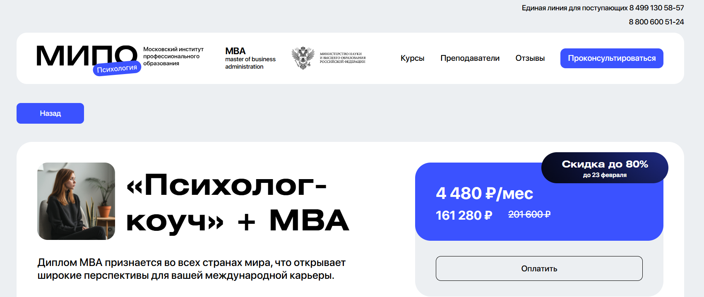
- ✅ Официальный сайт: mipoin.ru
- 💸 Цена: 161 280 ₽ со скидкой (полная стоимость 201 600 ₽).
- 💳 Рассрочка: от 4 480 ₽ в месяц.
- 📚 Формат: дистанционные форматы: видеоуроки, текстовые материалы, тестирования, практические задания, вебинары, общение с преподавателями и студентами в Telegram.
- ⏳ Продолжительность: 15 месяцев.
- 📜 Документ: три диплома и две квалификации, включая международное приложение к диплому.
- 📝 Трудоустройство: возможность начать частную практику и развивать личный бренд после окончания обучения.
- 🔷 Для кого подходит курс: для начинающих, практикующих психологов, бизнес-консультантов и специалистов, планирующих профессиональную переподготовку.
Особенности:
Обучение проходит в дистанционном формате с доступом ко всем учебным материалам сразу после зачисления. Программа объединяет психологию и business administration, что усиливает управленческие навыки и формирует современные управленческие компетенции. Студенты изучают аспекты стратегического управления, основы менеджменту и элементы стратегическому маркетингу через призму психологии. Курс ориентирован на практическую подготовку: кейсы из реальных проектов, тренировки консультирования и работа с ограничивающими убеждениями клиентов. Образовательный процесс выстроен по стандартам MBA и учитывает требования к руководителям высшего звена и менеджерам высшей категории. Выпускники получают дипломы международного уровня, что расширяет возможности на рынке труда и в международных организациях. После завершения обучения слушатели получают квалификацию психолога-консультанта и специалиста по бизнес-психологии, что помогает в развитии карьеры и создании собственных проектов.
Чему учатся студенты:
- Основам общей, социальной, возрастной и организационной психологии.
- Проведению коуч-сессий и применению техники «Колесо баланса».
- Работе с ценностями, целями и мотивацией клиентов.
- Управлению конфликтами и развитию эмоционального интеллекта.
- Карьерному коучингу, командообразованию и управлению командой.
- Психологическому бизнес-консультированию и эффективному управлению.
- Анализу поведения в компаниях и принятию управленческих решений.
Преподаватели:
- Антонкина Таисия — когнитивно-поведенческий терапевт, профессиональный коуч, практикующий психолог.
- Рыбальченко Наталья — преподаватель философии МГУ им. Ломоносова, консультирующий психолог, религиовед.
- Круглушина Олеся — выпускник МГОУ, факультет психологии, консультирующий психолог.
- Бербер Наталья — кандидат психологических наук, арт-терапевт, сертифицированный НЛП-практик.
- Череменская Мария — выпускник МГУ им. Ломоносова, специалист по гештальт терапии и групповой психологии.
- Шушкина Людмила — семейный психолог, автор книг по популярной психологии.
- Пронькина Анастасия — клинический и когнитивно-поведенческий психолог.
- Дарменко Елена — научный специалист, психолог, бизнес-тренер.
- Лебедев Александр — кандидат экономических наук, доцент МГТУ им. Н.Э. Баумана и МГИМО МИД РФ.
- Лаврова Юлия — психолог в сфере менеджмента, гипнотерапевт, практикующий юридический психолог.
- Латынцева Ольга — практикующий семейный психолог, ведущая тренингов, эксперт на телевидении.
Преимущества:
- Дистанционные форматы обучения с удобным графиком и доступом к материалам 24/7.
- Три диплома, включая дипломы МВА и международное приложение.
- Регулярные вебинары и обратная связь от экспертов и кураторов.
- Подготовка управленческих и профессиональных компетенций для работы в бизнесе и частной практике.
- Практическая направленность и разбор реальных кейсов.
- Возможность повышения квалификации и расширения специализации.
Отзывы учеников:
Слушатели отмечают удобный дистанционный формат и доступность учебных материалов. Часто подчеркивают сильный преподавательский состав и практическую направленность занятий. В отзывах упоминают гибкий график, возможность совмещать обучение с работой и понятную подачу информации. Многие выпускники пишут, что уже во время прохождения курсов начали применять полученные знания в практике и расширили профессиональные возможности.
Перейти на официальный сайт курса10. Психолог – когнитивно-поведенческий терапевт + MBA – Московский Институт Профессионального Образования
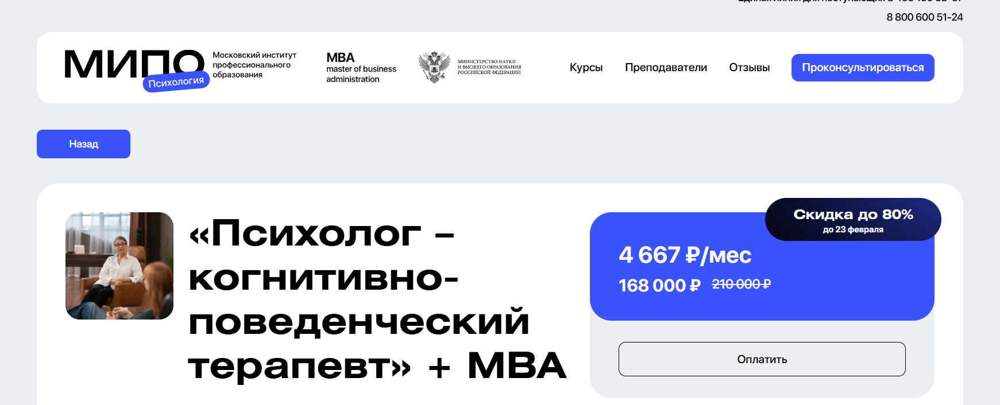
- ✅ Официальный сайт: mipoin.ru
- 💸 Цена обучения: 168 000 ₽ (со скидкой до 80%, полная стоимость 210 000 ₽).
- 💳 Рассрочка: от 4 667 ₽ в месяц.
- 📚 Формат: дистанционные занятия, видеолекции, тестирования, практические задания, вебинары с преподавателями, чат в Telegram.
- ⏳ Продолжительность: 15 месяцев.
- 📜 Документ: три диплома установленного образца о профессиональной переподготовке и международное приложение к диплому, две квалификации.
- 📝 Трудоустройство: выпускники получают право вести частную практику и работать по специальности сразу после окончания обучения.
- 🔷 Для кого подходит курс: для начинающих специалистов, практикующих психологов, социальных работников и тех, кто планирует развитие управленческих навыков и выход на международных рынках.
Особенности:
Обучение проходит в дистанционном формате и сочетает психологическую подготовку с программой mba по направлению business administration. Студенты осваивают когнитивно-поведенческую психотерапию и получают степень мва с уклоном в business psychology. Программа включает блок «Психология» на 998 часов, модуль по когнитивно-поведенческой терапии на 966 часов и направление master of business administration объемом 256 часов. Доступ ко всем учебным материалам предоставляется сразу после зачисления. Форматы обучения включают видеолекции, практические кейсы и регулярные вебинары с экспертами. В процессе прохождения курсов слушатели получают практические навыки консультирования и работы с различными типами клиентов. После завершения обучения выпускники получают дипломы международного образца, что расширяет возможности профессионального роста и развития бизнеса в сфере психологических услуг.
Чему учатся студенты:
- Основам общей, социальной, возрастной и организационной психологии.
- Методам психологического консультирования и психодиагностики.
- Работе с тревожными расстройствами и сопротивлением клиента.
- Принципам рационально-эмоционально-поведенческой терапии и ABC-теории личности.
- Психологии управления, лидерству и управлению командой.
- Карьерному коучингу и психологическому бизнес-консультированию.
- Инструментам эффективных коммуникаций и тайм-менеджменту.
Преподаватели:
- Антонкина Таисия — когнитивно-поведенческий терапевт, профессиональный коуч, практикующий психолог.
- Шушкина Людмила — семейный психолог, преподаватель, автор книг по популярной психологии.
- Урывчикова Татьяна — нейропсихолог, клинический психолог, преподаватель, член Ассоциации когнитивно-поведенческой психотерапии.
- Бербер Наталья — кандидат психологических наук, профессиональный психолог, арт-терапевт, сертифицированный НЛП-практик.
- Череменская Мария — выпускник МГУ им. Ломоносова, специалист по гештальт-терапии и групповой психологии.
- Рыбальченко Наталья — преподаватель философии МГУ им. Ломоносова, консультирующий психолог.
- Ильин Александр — специалист по инклюзивному образованию и психолого-педагогическому сопровождению.
- Дарменко Елена — научный специалист, исследователь, психолог, бизнес-тренер.
- Лебедев Александр — кандидат экономических наук, доцент МГТУ им. Н.Э. Баумана и МГИМО МИД РФ.
- Лаврова Юлия — психолог в сфере менеджмента, гипнотерапевт, практикующий юридический психолог.
- Латынцева Ольга — практикующий семейный психолог, ведущая тренингов, эксперт на телевидении.
Преимущества:
- Сочетание психологической подготовки и программы executive mba в дистанционном обучении.
- Получение двух квалификаций и международного приложения к диплому.
- Практическая направленность и работа с реальными кейсами.
- Регулярная обратная связь от преподавателей и кураторов.
- Возможность освоить стратегическому управлению и развитию управленческих компетенций.
- Доступ к дополнительным материалам и записям вебинаров.
Отзывы учеников:
Слушатели отмечают удобный онлайн-формат, насыщенные учебные материалы и сильный преподавательский состав. Многие подчеркивают, что уже во время обучения начинают применять полученные знания в практике. В отзывах часто выделяют доступную стоимостью обучения, понятную подачу информации и возможность совмещать учебу с работой. Выпускники получают дипломы и подтверждают, что программа помогает в повышении квалификации и карьерных перспективах.
Перейти на официальный сайт курса11. «Гештальт-терапевт» + MBA – Московский Институт Профессионального Образования
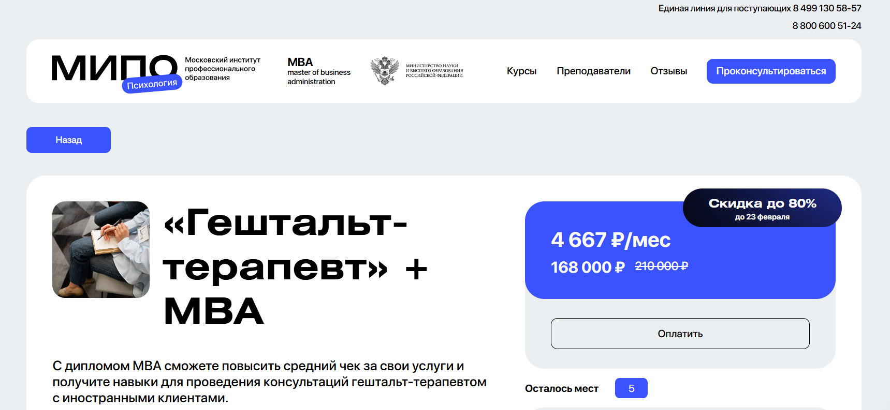
- ✅ Официальный сайт: mipoin.ru
- 💸 Цена: 168 000 ₽ (со скидкой, полная стоимость 210 000 ₽).
- 💳 Рассрочка: от 4 667 ₽ в месяц.
- 📚 Формат: дистанционные форматы, видеолекции, практические задания, тестирования, живые вебинары, чат с преподавателями.
- ⏳ Продолжительность: 15 месяцев.
- 📜 Документ: три диплома о профессиональной переподготовке, две квалификации и международное приложение к диплому.
- 📝 Трудоустройство: подготовка к частной практике, развитие профессионального бренда, повышение среднего чека.
- 🔷 Для кого подходит курс: для практикующих психологов, специалистов без опыта, работников образования и тех, кто планирует карьеру в сфере бизнес-консультирования.
Особенности:
Обучение проходит в дистанционном формате и сочетает подготовку по психологии и business administration. Программа ориентирована на развитие управленческих навыков и профессиональных компетенций, что соответствует стандартам MBA и требованиям к специалистам международного уровня. Студенты получают практические знания по стратегическому управлению, стратегическому маркетингу и финансовым инструментам, применимым в консультировании. В рамках обучения предусмотрены дистанционные курсы с удобным доступом к учебным материалам и регулярной обратной связью. Программы включают блоки по гештальт-подходу и модули executive mba, направленные на развитие навыков управления и стратегических решений. После окончания обучения выпускники получают дипломы международного образца и могут работать с клиентами из разных стран. Курс длится 15 месяцев и позволяет совмещать учебу с работой. Форматы обучения подходят как для руководителей высшего звена, так и для специалистов, планирующих рост в сфере делового администрирования.
Чему учатся студенты:
- Базовых знаний по общей, социальной и возрастной психологии.
- Психодиагностике и психологическому консультированию.
- Работе с сопротивлением в гештальт-терапии: ретрофлексия, дефлексия, интроекция, проекция.
- Техникам работы со сновидениями и групповой терапии.
- Стратегическому планированию и развитию бизнеса в сфере психологических услуг.
- Карьерному коучингу, управлению командой и корпоративным коммуникациям.
- Современным управленческим решениям и аспектам бизнеса для выхода на международные рынки.
Преподаватели:
- Дубровская Анастасия — профессиональный психолог, гештальт-терапевт.
- Шушкина Людмила — семейный психолог, преподаватель, автор книг по популярной психологии.
- Круглушина Олеся — выпускник МГОУ, факультет психологии, консультирующий психолог.
- Шавырина Анна — кандидат психологических наук, спикер Городского экспертно-консультативного совета Родительской общественности.
- Череменская Мария — выпускник МГУ им. Ломоносова, специалист по гештальт-терапии и групповой психологии.
- Рыбальченко Наталья — преподаватель философии МГУ им. Ломоносова, консультирующий психолог.
- Лебедев Александр — кандидат экономических наук, доцент МГТУ им. Н.Э. Баумана и МГИМО МИД РФ.
- Лаврова Юлия — практикующий семейный психолог, эксперт на телевидении.
Преимущества:
- Дистанционное обучение с доступом к материалам сразу после зачисления.
- Сочетание подготовки по психологии и программы mba general с уклоном в бизнес-практику.
- Развитие управленческих компетенций и навыков управления проектами.
- Поддержка кураторов и живые вебинары с экспертами.
- Возможность повышения квалификации и получения степени мва.
- Подготовка к работе с корпоративными клиентами и международных организациях.
- Практическая направленность и работа с реальными кейсами.
Отзывы учеников:
Слушатели отмечают удобный формат дистанционного обучения и доступ к учебным материалам в любое удобное время. Часто подчеркивают профессионализм преподавателей и практическую направленность программы. Выпускники пишут, что прошли обучение без отрыва от работы, повысили квалификацию и расширили карьерные возможности. Также отмечают понятную структуру модулей и поддержку кураторов на всех этапах прохождения курсов.
Перейти на официальный сайт курсаКурсы MBA — современный путь к управленческому успеху
Курсы MBA — это программы бизнес-образования, направленные на развитие стратегического мышления, управленческих компетенций и лидерских качеств. MBA (Master of Business Administration) давно стал международным стандартом подготовки руководителей и предпринимателей, которые планируют масштабировать бизнес, выходить на новые рынки и занимать руководящие позиции.
Сегодня программы MBA ориентированы на практику, реальные кейсы и актуальные бизнес-тренды. Обучение помогает не только систематизировать знания, но и сформировать новое видение развития компании в условиях быстро меняющейся экономики.
Кто такой выпускник MBA?
Выпускник MBA — это управленец нового поколения, обладающий стратегическим мышлением и навыками комплексного анализа бизнес-процессов. Это специалист, который способен принимать взвешенные решения, управлять командами и эффективно распределять ресурсы.
Чаще всего MBA выбирают:
- действующие руководители среднего и высшего звена;
- предприниматели и владельцы бизнеса;
- специалисты, планирующие карьерный рост;
- менеджеры, стремящиеся выйти на международный уровень.
Что делают специалисты с образованием MBA и чем занимаются?
После окончания программы MBA специалисты работают в различных сферах: от финансов и маркетинга до IT и промышленности. Их главная задача — повышение эффективности бизнеса и достижение стратегических целей.
Основные направления деятельности:
- разработка стратегии развития компании;
- финансовое планирование и управление бюджетом;
- оптимизация бизнес-процессов;
- управление персоналом и формирование сильной команды;
- выход на новые рынки и масштабирование бизнеса;
- антикризисное управление.
Образование MBA позволяет видеть бизнес целостно и прогнозировать его развитие в долгосрочной перспективе.
Что должен знать и уметь управленец после MBA?
Программы MBA формируют комплексные знания в области управления. Выпускник должен обладать не только теоретической базой, но и практическими навыками.
Ключевые знания:
- финансовый анализ и корпоративные финансы;
- маркетинговые стратегии и аналитика;
- операционный менеджмент;
- управление проектами;
- бизнес-планирование и инвестиционный анализ;
- корпоративное право и основы налогообложения.
Практические навыки:
- принятие управленческих решений в условиях неопределенности;
- переговоры и деловая коммуникация;
- лидерство и мотивация сотрудников;
- управление изменениями;
- работа с большими объемами информации.
Современные курсы MBA делают акцент на цифровую трансформацию бизнеса, аналитические инструменты и развитие гибкости мышления.
Востребованность и зарплаты выпускников MBA в России
На российском рынке труда специалисты с дипломом MBA остаются востребованными, особенно в крупных компаниях и международных корпорациях. Работодатели ценят системный подход к управлению и способность эффективно решать сложные задачи.
Уровень дохода зависит от опыта, региона и сферы деятельности, однако наличие MBA значительно повышает конкурентоспособность кандидата.
- руководители отделов — от 150 000 рублей в месяц;
- топ-менеджеры — от 300 000 рублей и выше;
- директора по развитию — от 250 000 рублей;
- предприниматели — доход зависит от масштаба бизнеса.
В перспективе спрос на управленцев с бизнес-образованием будет расти, особенно в сфере цифровых технологий, логистики и финансов.
Как стать обладателем MBA и где учиться?
Чтобы поступить на курсы MBA, как правило, требуется высшее образование и опыт работы от 2–3 лет. Некоторые программы предъявляют дополнительные требования: знание английского языка, прохождение собеседования или тестирования.
Форматы обучения разнообразны:
- очный формат с посещением занятий;
- вечерние и модульные программы;
- онлайн-обучение;
- международные программы с двойным дипломом.
При выборе программы важно учитывать аккредитацию школы, преподавательский состав, деловые связи и репутацию выпускников. Инвестиции в MBA окупаются за счет карьерного роста и расширения профессиональных возможностей.
Преимущества обучения на курсах MBA
Получение степени MBA открывает новые горизонты в карьере и бизнесе.
- ускоренный карьерный рост;
- расширение профессиональных контактов;
- повышение уровня дохода;
- развитие стратегического мышления;
- уверенность в управленческих решениях;
- возможность выхода на международный рынок.
Кроме того, обучение помогает сформировать личный бренд руководителя и укрепить профессиональную репутацию.
Стоит ли выбирать курсы MBA сегодня?
Курсы MBA — это инвестиция в будущее. В условиях высокой конкуренции и динамичного развития рынка бизнес-образование становится важным инструментом для достижения устойчивого успеха. Компании нуждаются в лидерах, способных управлять изменениями и создавать долгосрочные стратегии.
Если цель — выйти на новый уровень управления, увеличить доход и расширить профессиональные горизонты, обучение по программе MBA становится логичным и перспективным шагом.
Что дают курсы MBA для развития управленческих навыков и стратегическому менеджменту?
Курсы MBA направлены на развитие управленческих навыков, формирование стратегического мышления и подготовку к стратегическому менеджменту. Программы MBA охватывают ключевые аспекты бизнеса, включая стратегическому управлению, финансовым менеджментом, операционный менеджмент и стратегическому маркетингу. Студенты получают практическое знание, осваивают современные инструменты управления и учатся принимать эффективных управленческих решений в компаниях разных сфер. После окончания обучения выпускники получают дипломы MBA, подтверждающие квалификацию международного уровня.
Чем отличается Executive MBA от MBA General и General MBA?
Executive MBA ориентирован на руководителей высшего звена и менеджеров высшей категории с управленческим опытом. Программы Executive делают акцент на стратегическому развитию, корпоративном управлении и стратегических решений. MBA General или General MBA подходит специалистам и предпринимателями, которые хотят получить базовые знания по business administration и расширить управленческую компетенцию. Обе программы соответствуют стандартам MBA и позволяют получить диплома международных стандартов.
Кому подходят программы MBA и mini MBA?
Программы MBA подходят менеджерам, руководителям и специалистам, ориентированным на профессиональный рост и развитие управленческих компетенций. Программы mini MBA и mini-mba рассчитаны на тех, кто хочет пройти интенсивное обучение в кратчайшие сроки. Mini форматы дают базовые дисциплины, практические инструменты и актуальные знания по стратегиями маркетинга, финансам и управлению проектами без длительного срока обучения.
Можно ли пройти курсы MBA в дистанционном обучении и онлайн формате?
Сегодня многие бизнес-школы предлагают дистанционные форматы и дистанционные курсы MBA. Обучения проходит онлайн, что позволяет учиться в любое удобное время без отрыва от работы. Дистанционном обучении используются современные образовательные технологии, цифровых платформы и учебных материалов с постоянным доступом. Такой удобный формат подходит сотрудником компаний, предпринимателями и менеджеры среднего звена.
Какие форматы обучения доступны на программах MBA?
Форматы обучения включают очным обучением, дистанционные форматы, интенсивный модульный формат и смешанные программы. В очных школах бизнеса занятия проходят в аудиториях с преподавателями и экспертами рынка. Онлайн программы проходят онлайн с лекциях, кейсы и проекты из реальных компаний. Каждый участнику доступен выборы удобным формата с учетом сроку и стоимости обучения.
Что входит в учебные модули программы MBA?
Программы включают учебных модулей по стратегическому планированию, финансовых инструментов, корпоративных финансов, маркетингу, управлению командой и бизнес-процессов. Студенты научатся разрабатывать стратегию компании, стратегию продаж и принимать решения по развитию бизнеса. Учебных материалы охватывают основы делового администрирования, операционных процессов и международных рынков.
Выдают ли международных диплома и дипломы международного образца?
По завершения обучения выпускники получают дипломы MBA или степень MBA, подтверждающие профессиональное образование международного уровня. Некоторые business school предоставляют международных диплома и дипломы международного образца, соответствующие международных стандартов. Это повышает конкурентоспособность выпускнику на рынке труда и в международных организациях.
Какова стоимость курсов MBA и от чего зависит стоимостью обучения?
Стоимость курсов зависит от формата, школы менеджмента, длительности и статуса программы executive или general. В российских бизнес-школах и зарубежных университеты стоимостью обучения может отличаться. На цену влияют международный рейтинг, квалификация преподавателями, количество учебных модулей и дополнительные материалы. Некоторые школы предлагают бесплатный курс или бесплатных вводные модули для ознакомления.
Сколько длятся программы MBA и каковы сроки обучения?
Сроки обучения зависят от выбранной программы. Классическая степень MBA может длиться от 12 до 24 месяцы, mini MBA — несколько месяцы, а Executive MBA рассчитан на менеджеров высшей категории и длится дольше. Курс длится в зависимости от интенсивности и выбранного формата: очных или дистанционных. После окончания курсов и завершения обучения слушатели получают дипломы.
Какие навыки управления и профессиональных компетенций развивают курсы MBA?
Курсы MBA развивают навыков управления командой, стратегическому мышлению, эффективному управлению проектами и корпоративных финансов. Студенты получат опыт в разработке стратегий, анализе данных и управленческих задач. Освоят современные технологии, инструменты планирования и подходы к корпоративном управлении. Это способствует профессиональному развитию и карьерных росту.
Подходит ли MBA для профессиональной переподготовке и повышения квалификации?
Да, программы MBA подходят для профессиональный переподготовке и дополнительное профессиональное образования. Курсы повышения квалификации в формате mini-mba позволяют обновить актуальные знания без отрыва от работы. После прохождения курсов специалисты получают сертификаты и дипломы, подтверждающие новую квалификацию в сфере менеджменту и business administration.
Какие преимущества дает обучение в бизнес-школы международного уровня?
Обучение в высшую школу бизнеса международного уровня обеспечивает международный опыт, доступ к глобальным кейсам и преподавателями из ведущих компаний. Business academy и международную академию менеджмента предлагают программы executive и general по стандартам mba. Выпускники получают дипломы международного образца и выходят на новый уровень управленческого опыта.
Какие возможности карьерного роста открывает степень MBA?
Степень MBA помогает менеджеры и руководителям выйти на высший управленческий уровень. Выпускники получают необходимые навыков для стратегических решений и развития бизнеса. Многие топ-менеджеры и лидеры крупных компаний прошли обучение по программам MBA. Это открывает возможности работы в международных организациях и на международных рынков.
Что получают студенты после окончания обучения MBA?
Студенты получают дипломы MBA, подтверждающие степень MBA и квалификацию в области делового администрирования. Выпускники получают практическую подготовку, реальные проекты и доступы к сообществу эксперты и предпринимателями. После окончания обучения они смогут применять современные инструменты управления и стратегиями маркетинга в реальных бизнесы.
Как выбрать лучшие курсы MBA среди различных школ бизнеса?
При выборе важно учитывать рейтинг, стандарты, квалификацию преподавателями, форматы обучения и стоимость курсов. Российскому и зарубежных рынок предлагает множество программ MBA, включая executive mba, mba general и программы mini mba. Рекомендуют обращать внимание на учебных модулями, практику, реальные кейсы и возможности прохождения в дистанционном обучении. Правильный выбор поможет получить качественное образование и выйти на новый уровень профессиональных компетенций.
Можно ли совмещать прохождения курсов MBA с работой?
Многие слушателями проходят онлайн обучение без отрыва от профессиональной деятельности. Дистанционные форматы позволяют учишься в любое удобное время. Это особенно важно для руководителям и специалистам, уже работающих в компаниях. Такой подход помогает сразу применять практические инструменты и решениями в текущих проектах.
Какие дисциплины изучают на программах MBA в сфере финансовых и стратегическому развитию?
В рамках программы изучить можно корпоративных финансов, финансовым менеджментом, стратегическому развитию, стратегическому планированию и управлению проектами. Освоят основы стратегического маркетингу, анализ международных рынков и операционный менеджмент. Эти базовых и специальных дисциплины формируют ключевых компетенций для успешных управленцы и мастеров делового администрирования.
Почему MBA считается стандартом качественного бизнес-образования?
MBA признан мировым стандартом бизнес-образования благодаря соответствию международных стандартов и ориентации на практическом опыте. Программы дают актуальные знания, практическую подготовку и эффективных управленческих решений. Выпускнику степень MBA подтверждает высокую квалификацию и готовность к управлению сложными бизнес-процессов в компаниях любых уровней.
--------------------------------------------
Реклама. Информация о рекламодателе по ссылкам в статье.